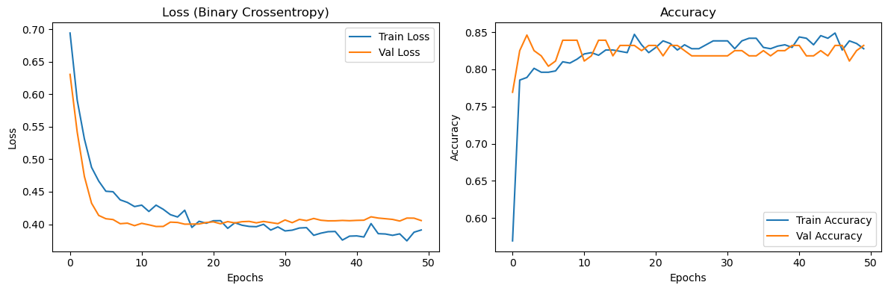
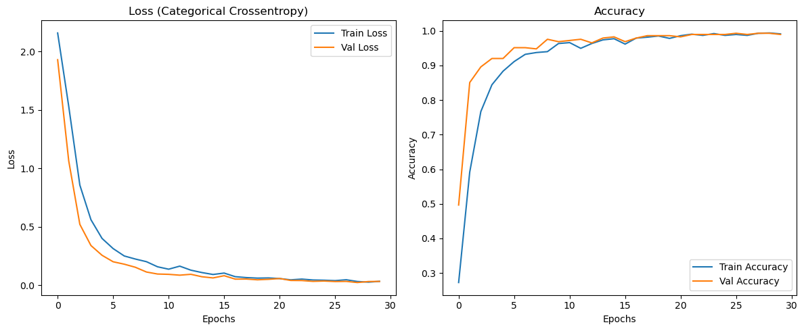
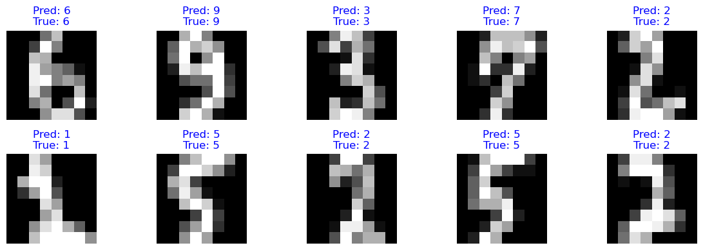

<!DOCTYPE html>


<html lang="en" data-content_root="../" >

  <head>
    <meta charset="utf-8" />
    <meta name="viewport" content="width=device-width, initial-scale=1.0" /><meta name="viewport" content="width=device-width, initial-scale=1" />

    <title>Ch 19. Learning Deep Learning &#8212; Data Analysis - Let AI Do the Work</title>
  
  
  
  <script data-cfasync="false">
    document.documentElement.dataset.mode = localStorage.getItem("mode") || "";
    document.documentElement.dataset.theme = localStorage.getItem("theme") || "";
  </script>
  
  <!-- Loaded before other Sphinx assets -->
  <link href="../_static/styles/theme.css?digest=dfe6caa3a7d634c4db9b" rel="stylesheet" />
<link href="../_static/styles/bootstrap.css?digest=dfe6caa3a7d634c4db9b" rel="stylesheet" />
<link href="../_static/styles/pydata-sphinx-theme.css?digest=dfe6caa3a7d634c4db9b" rel="stylesheet" />

  
  <link href="../_static/vendor/fontawesome/6.5.2/css/all.min.css?digest=dfe6caa3a7d634c4db9b" rel="stylesheet" />
  <link rel="preload" as="font" type="font/woff2" crossorigin href="../_static/vendor/fontawesome/6.5.2/webfonts/fa-solid-900.woff2" />
<link rel="preload" as="font" type="font/woff2" crossorigin href="../_static/vendor/fontawesome/6.5.2/webfonts/fa-brands-400.woff2" />
<link rel="preload" as="font" type="font/woff2" crossorigin href="../_static/vendor/fontawesome/6.5.2/webfonts/fa-regular-400.woff2" />

    <link rel="stylesheet" type="text/css" href="../_static/pygments.css?v=03e43079" />
    <link rel="stylesheet" type="text/css" href="../_static/styles/sphinx-book-theme.css?v=eba8b062" />
    <link rel="stylesheet" type="text/css" href="../_static/togglebutton.css?v=13237357" />
    <link rel="stylesheet" type="text/css" href="../_static/copybutton.css?v=76b2166b" />
    <link rel="stylesheet" type="text/css" href="../_static/mystnb.4510f1fc1dee50b3e5859aac5469c37c29e427902b24a333a5f9fcb2f0b3ac41.css" />
    <link rel="stylesheet" type="text/css" href="../_static/sphinx-thebe.css?v=4fa983c6" />
    <link rel="stylesheet" type="text/css" href="../_static/sphinx-design.min.css?v=95c83b7e" />
  
  <!-- Pre-loaded scripts that we'll load fully later -->
  <link rel="preload" as="script" href="../_static/scripts/bootstrap.js?digest=dfe6caa3a7d634c4db9b" />
<link rel="preload" as="script" href="../_static/scripts/pydata-sphinx-theme.js?digest=dfe6caa3a7d634c4db9b" />
  <script src="../_static/vendor/fontawesome/6.5.2/js/all.min.js?digest=dfe6caa3a7d634c4db9b"></script>

    <script src="../_static/documentation_options.js?v=9eb32ce0"></script>
    <script src="../_static/doctools.js?v=9bcbadda"></script>
    <script src="../_static/sphinx_highlight.js?v=dc90522c"></script>
    <script src="../_static/clipboard.min.js?v=a7894cd8"></script>
    <script src="../_static/copybutton.js?v=f281be69"></script>
    <script src="../_static/scripts/sphinx-book-theme.js?v=887ef09a"></script>
    <script>let toggleHintShow = 'Click to show';</script>
    <script>let toggleHintHide = 'Click to hide';</script>
    <script>let toggleOpenOnPrint = 'true';</script>
    <script src="../_static/togglebutton.js?v=4a39c7ea"></script>
    <script>var togglebuttonSelector = '.toggle, .admonition.dropdown';</script>
    <script src="../_static/design-tabs.js?v=f930bc37"></script>
    <script>const THEBE_JS_URL = "https://unpkg.com/thebe@0.8.2/lib/index.js"; const thebe_selector = ".thebe,.cell"; const thebe_selector_input = "pre"; const thebe_selector_output = ".output, .cell_output"</script>
    <script async="async" src="../_static/sphinx-thebe.js?v=c100c467"></script>
    <script>window.MathJax = {"options": {"processHtmlClass": "tex2jax_process|mathjax_process|math|output_area"}}</script>
    <script defer="defer" src="https://cdn.jsdelivr.net/npm/mathjax@3/es5/tex-mml-chtml.js"></script>
    <script>DOCUMENTATION_OPTIONS.pagename = 'notebooks/19_Learning_Deep_Learning';</script>
    <link rel="index" title="Index" href="../genindex.html" />
    <link rel="search" title="Search" href="../search.html" />
    <link rel="next" title="Ch 20. Panel Data Analysis" href="20_Panel_Data_Analysis.html" />
    <link rel="prev" title="Ch 18. Tree-Based Models" href="18_Tree_Based_Models.html" />
  <meta name="viewport" content="width=device-width, initial-scale=1"/>
  <meta name="docsearch:language" content="en"/>
  </head>
  
  
  <body data-bs-spy="scroll" data-bs-target=".bd-toc-nav" data-offset="180" data-bs-root-margin="0px 0px -60%" data-default-mode="">

  
  
  <div id="pst-skip-link" class="skip-link d-print-none"><a href="#main-content">Skip to main content</a></div>
  
  <div id="pst-scroll-pixel-helper"></div>
  
  <button type="button" class="btn rounded-pill" id="pst-back-to-top">
    <i class="fa-solid fa-arrow-up"></i>Back to top</button>

  
  <input type="checkbox"
          class="sidebar-toggle"
          id="pst-primary-sidebar-checkbox"/>
  <label class="overlay overlay-primary" for="pst-primary-sidebar-checkbox"></label>
  
  <input type="checkbox"
          class="sidebar-toggle"
          id="pst-secondary-sidebar-checkbox"/>
  <label class="overlay overlay-secondary" for="pst-secondary-sidebar-checkbox"></label>
  
  <div class="search-button__wrapper">
    <div class="search-button__overlay"></div>
    <div class="search-button__search-container">
<form class="bd-search d-flex align-items-center"
      action="../search.html"
      method="get">
  <i class="fa-solid fa-magnifying-glass"></i>
  <input type="search"
         class="form-control"
         name="q"
         id="search-input"
         placeholder="Search this book..."
         aria-label="Search this book..."
         autocomplete="off"
         autocorrect="off"
         autocapitalize="off"
         spellcheck="false"/>
  <span class="search-button__kbd-shortcut"><kbd class="kbd-shortcut__modifier">Ctrl</kbd>+<kbd>K</kbd></span>
</form></div>
  </div>

  <div class="pst-async-banner-revealer d-none">
  <aside id="bd-header-version-warning" class="d-none d-print-none" aria-label="Version warning"></aside>
</div>

  
    <header class="bd-header navbar navbar-expand-lg bd-navbar d-print-none">
    </header>
  

  <div class="bd-container">
    <div class="bd-container__inner bd-page-width">
      
      
      
      <div class="bd-sidebar-primary bd-sidebar">
        

  
  <div class="sidebar-header-items sidebar-primary__section">
    
    
    
    
  </div>
  
    <div class="sidebar-primary-items__start sidebar-primary__section">
        <div class="sidebar-primary-item">

  
    
  

<a class="navbar-brand logo" href="00_Preface.html">
  
  
  
  
  
    
    
      
    
    
    
    <script>document.write(``);</script>
  
  
</a></div>
        <div class="sidebar-primary-item">

 <script>
 document.write(`
   <button class="btn search-button-field search-button__button" title="Search" aria-label="Search" data-bs-placement="bottom" data-bs-toggle="tooltip">
    <i class="fa-solid fa-magnifying-glass"></i>
    <span class="search-button__default-text">Search</span>
    <span class="search-button__kbd-shortcut"><kbd class="kbd-shortcut__modifier">Ctrl</kbd>+<kbd class="kbd-shortcut__modifier">K</kbd></span>
   </button>
 `);
 </script></div>
        <div class="sidebar-primary-item"><nav class="bd-links bd-docs-nav" aria-label="Main">
    <div class="bd-toc-item navbar-nav active">
        
        <ul class="nav bd-sidenav bd-sidenav__home-link">
            <li class="toctree-l1">
                <a class="reference internal" href="00_Preface.html">
                    Preface
                </a>
            </li>
        </ul>
        <ul class="current nav bd-sidenav">
<li class="toctree-l1"><a class="reference internal" href="01_Exam_Score_Analysis.html"><strong>Ch 1. Exam Score Analysis</strong></a></li>
<li class="toctree-l1"><a class="reference internal" href="02_Presidential_Approval_Rating_Analysis.html"><strong>Ch 2. Presidential Approval Rating Analysis</strong></a></li>
<li class="toctree-l1"><a class="reference internal" href="03_KBO_Regular_Season_Team_Performance.html"><strong>Ch 3. KBO Regular Season Team Performance Analysis</strong></a></li>
<li class="toctree-l1"><a class="reference internal" href="04_PPP_Graph_Analysis.html"><strong>Ch 4. PPP Graph Analysis</strong></a></li>
<li class="toctree-l1"><a class="reference internal" href="05_World_Bank_Data_Extraction.html"><strong>Ch 5. World Bank Data Extraction</strong></a></li>
<li class="toctree-l1"><a class="reference internal" href="06_Stock_Price_Prediction_System.html"><strong>Ch 6. Building a Stock Price Prediction System</strong></a></li>
<li class="toctree-l1"><a class="reference internal" href="07_News_Comments_Analysis.html"><strong>Ch 7. News Comments Analysis</strong></a></li>
<li class="toctree-l1"><a class="reference internal" href="08_Seoul_Apartment_Listing_Analysis.html"><strong>Ch 8. Analysis of Seoul Apartment Listing Changes</strong></a></li>
<li class="toctree-l1"><a class="reference internal" href="09_Survey_Analysis.html"><strong>Ch 9. Survey Analysis</strong></a></li>
<li class="toctree-l1"><a class="reference internal" href="10_Exploratory_Factor_Analysis.html"><strong>Ch 10. Exploratory Factor Analysis</strong></a></li>
<li class="toctree-l1"><a class="reference internal" href="11_Boston_Housing_Price_Analysis.html"><strong>Ch 11. Boston Housing Price Analysis</strong></a></li>
<li class="toctree-l1"><a class="reference internal" href="12_Comprehensive_Property_Tax_and_Rent.html"><strong>Ch 12. Comprehensive Property Tax and Rent</strong></a></li>
<li class="toctree-l1"><a class="reference internal" href="13_Hypermarket_Decline_Empirical_Analysis.html"><strong>Ch 13. Hypermarket Decline: An Empirical Analysis</strong></a></li>
<li class="toctree-l1"><a class="reference internal" href="14_Newborn_Special_Loan_and_Birth_Rate.html"><strong>Ch 14. Newborn Special Loan and Birth Rate</strong></a></li>
<li class="toctree-l1"><a class="reference internal" href="15_Ridge_and_Lasso_Regression.html"><strong>Ch 15. Ridge and Lasso Regression</strong></a></li>
<li class="toctree-l1"><a class="reference internal" href="16_Logistic_Regression.html"><strong>Ch 16. Logistic Regression</strong></a></li>
<li class="toctree-l1"><a class="reference internal" href="17_Decision_Tree_Model.html"><strong>Ch 17. Decision Tree Model</strong></a></li>
<li class="toctree-l1"><a class="reference internal" href="18_Tree_Based_Models.html"><strong>Ch 18. Tree-Based Models</strong></a></li>
<li class="toctree-l1 current active"><a class="current reference internal" href="#"><strong>Ch 19. Learning Deep Learning</strong></a></li>
<li class="toctree-l1"><a class="reference internal" href="20_Panel_Data_Analysis.html"><strong>Ch 20. Panel Data Analysis</strong></a></li>
<li class="toctree-l1"><a class="reference internal" href="21_Bone_Density_Test_Interpretation.html"><strong>Ch 21. Bone Density Test Interpretation</strong></a></li>
<li class="toctree-l1"><a class="reference internal" href="22_Kinematics.html"><strong>Ch 22. Kinematics</strong></a></li>
<li class="toctree-l1"><a class="reference internal" href="23_Soccer_Match_Data_Analysis.html"><strong>Ch 23. Soccer Match Data Analysis</strong></a></li>
<li class="toctree-l1"><a class="reference internal" href="24_Bombing_Destructive_Power_Analysis.html"><strong>Ch 24. Bombing Destructive Power Analysis</strong></a></li>
<li class="toctree-l1"><a class="reference internal" href="25_Global_Cosmetics_Trade_Trends.html"><strong>Ch 25. Global Cosmetics Trade Trends</strong></a></li>
<li class="toctree-l1"><a class="reference internal" href="26_Texas_Special_Education.html"><strong>Ch 26. Texas Special Education</strong></a></li>
</ul>

    </div>
</nav></div>
    </div>
  
  
  <div class="sidebar-primary-items__end sidebar-primary__section">
  </div>
  
  <div id="rtd-footer-container"></div>


      </div>
      
      <main id="main-content" class="bd-main" role="main">
        
        

<div class="sbt-scroll-pixel-helper"></div>

          <div class="bd-content">
            <div class="bd-article-container">
              
              <div class="bd-header-article d-print-none">
<div class="header-article-items header-article__inner">
  
    <div class="header-article-items__start">
      
        <div class="header-article-item"><button class="sidebar-toggle primary-toggle btn btn-sm" title="Toggle primary sidebar" data-bs-placement="bottom" data-bs-toggle="tooltip">
  <span class="fa-solid fa-bars"></span>
</button></div>
      
    </div>
  
  
    <div class="header-article-items__end">
      
        <div class="header-article-item">

<div class="article-header-buttons">


<div class="dropdown dropdown-source-buttons">
  <button class="btn dropdown-toggle" type="button" data-bs-toggle="dropdown" aria-expanded="false" aria-label="Source repositories">
    <i class="fab fa-github"></i>
  </button>
  <ul class="dropdown-menu">
      
      
      
      <li><a href="https://github.com/eduwon/AIDAe" target="_blank"
   class="btn btn-sm btn-source-repository-button dropdown-item"
   title="Source repository"
   data-bs-placement="left" data-bs-toggle="tooltip"
>
  

<span class="btn__icon-container">
  <i class="fab fa-github"></i>
  </span>
<span class="btn__text-container">Repository</span>
</a>
</li>
      
      
      
      
      <li><a href="https://github.com/eduwon/AIDAe/issues/new?title=Issue%20on%20page%20%2Fnotebooks/19_Learning_Deep_Learning.html&body=Your%20issue%20content%20here." target="_blank"
   class="btn btn-sm btn-source-issues-button dropdown-item"
   title="Open an issue"
   data-bs-placement="left" data-bs-toggle="tooltip"
>
  

<span class="btn__icon-container">
  <i class="fas fa-lightbulb"></i>
  </span>
<span class="btn__text-container">Open issue</span>
</a>
</li>
      
  </ul>
</div>


<div class="dropdown dropdown-download-buttons">
  <button class="btn dropdown-toggle" type="button" data-bs-toggle="dropdown" aria-expanded="false" aria-label="Download this page">
    <i class="fas fa-download"></i>
  </button>
  <ul class="dropdown-menu">
      
      
      
      <li><a href="../_sources/notebooks/19_Learning_Deep_Learning.ipynb" target="_blank"
   class="btn btn-sm btn-download-source-button dropdown-item"
   title="Download source file"
   data-bs-placement="left" data-bs-toggle="tooltip"
>
  

<span class="btn__icon-container">
  <i class="fas fa-file"></i>
  </span>
<span class="btn__text-container">.ipynb</span>
</a>
</li>
      
      
      
      
      <li>
<button onclick="window.print()"
  class="btn btn-sm btn-download-pdf-button dropdown-item"
  title="Print to PDF"
  data-bs-placement="left" data-bs-toggle="tooltip"
>
  

<span class="btn__icon-container">
  <i class="fas fa-file-pdf"></i>
  </span>
<span class="btn__text-container">.pdf</span>
</button>
</li>
      
  </ul>
</div>


<button onclick="toggleFullScreen()"
  class="btn btn-sm btn-fullscreen-button"
  title="Fullscreen mode"
  data-bs-placement="bottom" data-bs-toggle="tooltip"
>
  

<span class="btn__icon-container">
  <i class="fas fa-expand"></i>
  </span>

</button>


<script>
document.write(`
  <button class="btn btn-sm nav-link pst-navbar-icon theme-switch-button" title="light/dark" aria-label="light/dark" data-bs-placement="bottom" data-bs-toggle="tooltip">
    <i class="theme-switch fa-solid fa-sun fa-lg" data-mode="light"></i>
    <i class="theme-switch fa-solid fa-moon fa-lg" data-mode="dark"></i>
    <i class="theme-switch fa-solid fa-circle-half-stroke fa-lg" data-mode="auto"></i>
  </button>
`);
</script>


<script>
document.write(`
  <button class="btn btn-sm pst-navbar-icon search-button search-button__button" title="Search" aria-label="Search" data-bs-placement="bottom" data-bs-toggle="tooltip">
    <i class="fa-solid fa-magnifying-glass fa-lg"></i>
  </button>
`);
</script>
<button class="sidebar-toggle secondary-toggle btn btn-sm" title="Toggle secondary sidebar" data-bs-placement="bottom" data-bs-toggle="tooltip">
    <span class="fa-solid fa-list"></span>
</button>
</div></div>
      
    </div>
  
</div>
</div>
              
              

<div id="jb-print-docs-body" class="onlyprint">
    <h1>Ch 19. Learning Deep Learning</h1>
    <!-- Table of contents -->
    <div id="print-main-content">
        <div id="jb-print-toc">
            
            <div>
                <h2> Contents </h2>
            </div>
            <nav aria-label="Page">
                <ul class="visible nav section-nav flex-column">
<li class="toc-h2 nav-item toc-entry"><a class="reference internal nav-link" href="#concepts-history-and-types-of-deep-learning"><span style="color: blue;"><strong>1. Concepts, History, and Types of Deep Learning</strong></span></a></li>
<li class="toc-h2 nav-item toc-entry"><a class="reference internal nav-link" href="#gemini-explanation"><strong>Gemini Explanation</strong></a><ul class="nav section-nav flex-column">
<li class="toc-h3 nav-item toc-entry"><a class="reference internal nav-link" href="#the-concept-of-deep-learning">1. The Concept of Deep Learning</a><ul class="nav section-nav flex-column">
<li class="toc-h4 nav-item toc-entry"><a class="reference internal nav-link" href="#definition-representation-learning">Definition: Representation Learning</a></li>
<li class="toc-h4 nav-item toc-entry"><a class="reference internal nav-link" href="#core-principle-mimicking-the-brain">Core Principle: Mimicking the Brain</a></li>
<li class="toc-h4 nav-item toc-entry"><a class="reference internal nav-link" href="#traditional-machine-learning-vs-deep-learning">Traditional Machine Learning vs. Deep Learning</a></li>
</ul>
</li>
<li class="toc-h3 nav-item toc-entry"><a class="reference internal nav-link" href="#history-of-deep-learning">2. History of Deep Learning</a><ul class="nav section-nav flex-column">
<li class="toc-h4 nav-item toc-entry"><a class="reference internal nav-link" href="#st-generation-inception-1940s1960s-the-perceptron">1st Generation: Inception (1940s–1960s) — The Perceptron</a></li>
<li class="toc-h4 nav-item toc-entry"><a class="reference internal nav-link" href="#st-ai-winter-1969-the-xor-problem">1st AI Winter (1969) — The XOR Problem</a></li>
</ul>
</li>
<li class="toc-h3 nav-item toc-entry"><a class="reference internal nav-link" href="#nd-generation-revival-1980s-multi-layer-perceptrons-and-backpropagation">2nd Generation: Revival (1980s) — Multi-Layer Perceptrons and Backpropagation</a><ul class="nav section-nav flex-column">
<li class="toc-h4 nav-item toc-entry"><a class="reference internal nav-link" href="#nd-ai-winter-1990s-vanishing-gradient-and-the-rise-of-svm">2nd AI Winter (1990s) — Vanishing Gradient and the Rise of SVM</a></li>
</ul>
</li>
<li class="toc-h3 nav-item toc-entry"><a class="reference internal nav-link" href="#rd-generation-the-age-of-deep-learning-2006-present">3rd Generation: The Age of Deep Learning (2006 – Present)</a></li>
<li class="toc-h3 nav-item toc-entry"><a class="reference internal nav-link" href="#main-types-of-deep-learning">3. Main Types of Deep Learning</a><ul class="nav section-nav flex-column">
<li class="toc-h4 nav-item toc-entry"><a class="reference internal nav-link" href="#deep-neural-network-dnn">1. Deep Neural Network (DNN)</a></li>
<li class="toc-h4 nav-item toc-entry"><a class="reference internal nav-link" href="#convolutional-neural-network-cnn">2. Convolutional Neural Network (CNN)</a></li>
<li class="toc-h4 nav-item toc-entry"><a class="reference internal nav-link" href="#recurrent-neural-network-rnn">3. Recurrent Neural Network (RNN)</a></li>
<li class="toc-h4 nav-item toc-entry"><a class="reference internal nav-link" href="#transformer-attention">4. Transformer &amp; Attention</a></li>
<li class="toc-h4 nav-item toc-entry"><a class="reference internal nav-link" href="#generative-adversarial-network-gan">5. Generative Adversarial Network (GAN)</a></li>
<li class="toc-h4 nav-item toc-entry"><a class="reference internal nav-link" href="#autoencoder">6. Autoencoder</a></li>
<li class="toc-h4 nav-item toc-entry"><a class="reference internal nav-link" href="#deep-reinforcement-learning-deep-rl">7. Deep Reinforcement Learning (Deep RL)</a></li>
</ul>
</li>
<li class="toc-h3 nav-item toc-entry"><a class="reference internal nav-link" href="#summary">Summary</a></li>
</ul>
</li>
<li class="toc-h2 nav-item toc-entry"><a class="reference internal nav-link" href="#dnn-model-example"><span style="color: blue;"><strong>2. DNN Model Example</strong></span></a></li>
<li class="toc-h2 nav-item toc-entry"><a class="reference internal nav-link" href="#gemini-analysis"><strong>Gemini Analysis</strong></a><ul class="nav section-nav flex-column">
<li class="toc-h3 nav-item toc-entry"><a class="reference internal nav-link" href="#step-1-data-preprocessing">Step 1: Data Preprocessing</a></li>
<li class="toc-h3 nav-item toc-entry"><a class="reference internal nav-link" href="#step-2-model-architecture">Step 2: Model Architecture</a></li>
<li class="toc-h3 nav-item toc-entry"><a class="reference internal nav-link" href="#step-3-compile">Step 3: Compile</a></li>
<li class="toc-h3 nav-item toc-entry"><a class="reference internal nav-link" href="#step-4-train">Step 4: Train</a></li>
<li class="toc-h3 nav-item toc-entry"><a class="reference internal nav-link" href="#step-5-interpreting-results-evaluate">Step 5: Interpreting Results (Evaluate)</a><ul class="nav section-nav flex-column">
<li class="toc-h4 nav-item toc-entry"><a class="reference internal nav-link" href="#left-graph-loss">1. Left Graph: Loss</a></li>
<li class="toc-h4 nav-item toc-entry"><a class="reference internal nav-link" href="#right-graph-accuracy">2. Right Graph: Accuracy</a></li>
<li class="toc-h4 nav-item toc-entry"><a class="reference internal nav-link" href="#id1">Summary</a></li>
</ul>
</li>
</ul>
</li>
<li class="toc-h2 nav-item toc-entry"><a class="reference internal nav-link" href="#cnn-model-example"><span style="color: blue;"><strong>3. CNN Model Example</strong></span></a></li>
<li class="toc-h2 nav-item toc-entry"><a class="reference internal nav-link" href="#id2"><strong>Gemini Analysis</strong></a><ul class="nav section-nav flex-column">
<li class="toc-h3 nav-item toc-entry"><a class="reference internal nav-link" href="#id3">Step 1: Data Preprocessing</a></li>
<li class="toc-h3 nav-item toc-entry"><a class="reference internal nav-link" href="#id4">Step 2: Model Architecture</a></li>
<li class="toc-h3 nav-item toc-entry"><a class="reference internal nav-link" href="#step-3-training-and-results">Step 3: Training and Results</a></li>
</ul>
</li>
<li class="toc-h2 nav-item toc-entry"><a class="reference internal nav-link" href="#appendix-python-code"><strong>Appendix: Python Code</strong></a></li>
</ul>
            </nav>
        </div>
    </div>
</div>

              
                
<div id="searchbox"></div>
                <article class="bd-article">
                  
  <section class="tex2jax_ignore mathjax_ignore" id="ch-19-learning-deep-learning">
<h1><strong>Ch 19. Learning Deep Learning</strong><a class="headerlink" href="#ch-19-learning-deep-learning" title="Link to this heading">#</a></h1>
<section id="concepts-history-and-types-of-deep-learning">
<h2><span style="color: blue;"><strong>1. Concepts, History, and Types of Deep Learning</strong></span><a class="headerlink" href="#concepts-history-and-types-of-deep-learning" title="Link to this heading">#</a></h2>
</section>
<section id="gemini-explanation">
<h2><strong>Gemini Explanation</strong><a class="headerlink" href="#gemini-explanation" title="Link to this heading">#</a></h2>
<section id="the-concept-of-deep-learning">
<h3>1. The Concept of Deep Learning<a class="headerlink" href="#the-concept-of-deep-learning" title="Link to this heading">#</a></h3>
<section id="definition-representation-learning">
<h4>Definition: Representation Learning<a class="headerlink" href="#definition-representation-learning" title="Link to this heading">#</a></h4>
<p>Deep learning is a subfield of machine learning, defined as <strong>“a technology in which machines autonomously learn latent representations of data through artificial neural networks.”</strong></p>
</section>
<section id="core-principle-mimicking-the-brain">
<h4>Core Principle: Mimicking the Brain<a class="headerlink" href="#core-principle-mimicking-the-brain" title="Link to this heading">#</a></h4>
<p>The human brain consists of approximately 100 billion neurons and the synapses that connect them. Deep learning models this mathematically.</p>
<ul class="simple">
<li><p><strong>Neuron ≈ Node:</strong> A unit that receives and processes information.</p></li>
<li><p><strong>Synapse ≈ Weight:</strong> Connection strength that adjusts the importance of information. Corresponds to <span class="math notranslate nohighlight">\(w\)</span> in <span class="math notranslate nohighlight">\(y = wx + b\)</span>.</p></li>
<li><p><strong>Activation:</strong> The process of transmitting a signal when a certain threshold is exceeded (activation function).</p></li>
</ul>
</section>
<section id="traditional-machine-learning-vs-deep-learning">
<h4>Traditional Machine Learning vs. Deep Learning<a class="headerlink" href="#traditional-machine-learning-vs-deep-learning" title="Link to this heading">#</a></h4>
<p>The most important difference is <strong>who performs ‘feature extraction.’</strong></p>
<ul class="simple">
<li><p><strong>Machine Learning (Classic ML):</strong> Humans must manually define features. (e.g., Coding the feature “cats have pointy ears” and feeding it to the model)</p></li>
<li><p><strong>Deep Learning:</strong> Just feed the data and the machine discovers features on its own. (e.g., After seeing tens of thousands of photos, it learns “this pattern must be an ear”) This is called <strong>representation learning</strong>.</p></li>
</ul>
</section>
</section>
<hr class="docutils" />
<section id="history-of-deep-learning">
<h3>2. History of Deep Learning<a class="headerlink" href="#history-of-deep-learning" title="Link to this heading">#</a></h3>
<p>The history of deep learning has been a repetition of ‘expectations’ and ‘disappointments (AI winters).’ Understanding this progression is important for grasping the limitations and future directions of deep learning.</p>
<section id="st-generation-inception-1940s1960s-the-perceptron">
<h4>1st Generation: Inception (1940s–1960s) — The Perceptron<a class="headerlink" href="#st-generation-inception-1940s1960s-the-perceptron" title="Link to this heading">#</a></h4>
<ul class="simple">
<li><p><strong>1943:</strong> Warren McCulloch and Walter Pitts proposed the first artificial neuron model.</p></li>
<li><p><strong>1958:</strong> Frank Rosenblatt published the <strong>‘Perceptron’</strong> algorithm. It was a linear classifier that multiplied inputs by weights, summed them, and output 0 or 1. It received enormous attention at the time as a “thinking machine.”</p></li>
</ul>
</section>
<section id="st-ai-winter-1969-the-xor-problem">
<h4>1st AI Winter (1969) — The XOR Problem<a class="headerlink" href="#st-ai-winter-1969-the-xor-problem" title="Link to this heading">#</a></h4>
<ul class="simple">
<li><p><strong>1969:</strong> Marvin Minsky and Seymour Papert mathematically proved in their book <em>Perceptrons</em> that <strong>“a single-layer perceptron can only solve simple linear problems and can never solve nonlinear problems like XOR (exclusive OR).”</strong></p></li>
<li><p>This led to funding cuts for neural network research, ushering in the first dark age.</p></li>
</ul>
</section>
</section>
<section id="nd-generation-revival-1980s-multi-layer-perceptrons-and-backpropagation">
<h3>2nd Generation: Revival (1980s) — Multi-Layer Perceptrons and Backpropagation<a class="headerlink" href="#nd-generation-revival-1980s-multi-layer-perceptrons-and-backpropagation" title="Link to this heading">#</a></h3>
<ul class="simple">
<li><p><strong>1986:</strong> Geoffrey Hinton and colleagues rediscovered and popularized the <strong>‘backpropagation’</strong> algorithm.</p></li>
<li><p>This enabled training of <strong>multi-layer perceptrons (MLPs)</strong> with hidden layers. Nonlinear problems, including the XOR problem, could finally be solved.</p></li>
</ul>
<section id="nd-ai-winter-1990s-vanishing-gradient-and-the-rise-of-svm">
<h4>2nd AI Winter (1990s) — Vanishing Gradient and the Rise of SVM<a class="headerlink" href="#nd-ai-winter-1990s-vanishing-gradient-and-the-rise-of-svm" title="Link to this heading">#</a></h4>
<ul class="simple">
<li><p>Problems emerged where learning failed as neural networks were stacked deeper.</p>
<ol class="arabic simple">
<li><p><strong>Vanishing Gradient:</strong> During backpropagation, errors gradually approach 0 as they are transmitted to earlier layers, causing learning to stall.</p></li>
<li><p><strong>Insufficient Data and Computing Power:</strong> Computers at the time could not handle complex computations.</p></li>
</ol>
</li>
<li><p>During this period, machine learning algorithms like <strong>SVM (Support Vector Machine)</strong> and <strong>Random Forest</strong>, which were mathematically elegant and performance-guaranteed, became mainstream.</p></li>
</ul>
</section>
</section>
<section id="rd-generation-the-age-of-deep-learning-2006-present">
<h3>3rd Generation: The Age of Deep Learning (2006 – Present)<a class="headerlink" href="#rd-generation-the-age-of-deep-learning-2006-present" title="Link to this heading">#</a></h3>
<ul class="simple">
<li><p><strong>2006:</strong> Professor Geoffrey Hinton demonstrated the feasibility of training deep neural networks through Deep Belief Networks (DBNs), beginning to use the term ‘Deep Learning.’</p></li>
<li><p><strong>2012 (The Big Bang):</strong> Hinton’s team’s <strong>AlexNet</strong> won the ImageNet image recognition competition by a commanding margin.</p>
<ul>
<li><p><strong>Success factors:</strong> Utilizing GPUs for computation, using the ReLU activation function (solving vanishing gradient), and introducing Dropout (preventing overfitting).</p></li>
</ul>
</li>
<li><p>Subsequently, Google, Facebook, and others began massive investments, leading to the current AI boom including AlphaGo (2016), GPT (2018–), and beyond.</p></li>
</ul>
</section>
<hr class="docutils" />
<section id="main-types-of-deep-learning">
<h3>3. Main Types of Deep Learning<a class="headerlink" href="#main-types-of-deep-learning" title="Link to this heading">#</a></h3>
<p>Model architectures are categorized according to the form of data (images, text, tabular data) and the objective.</p>
<section id="deep-neural-network-dnn">
<h4>1. Deep Neural Network (DNN)<a class="headerlink" href="#deep-neural-network-dnn" title="Link to this heading">#</a></h4>
<ul class="simple">
<li><p><strong>Structure:</strong> The most basic form, with input, hidden, and output layers all fully connected.</p></li>
<li><p><strong>Characteristics:</strong> Strong at processing tabular data (e.g., spreadsheet data).</p></li>
<li><p><strong>Limitations:</strong> Inefficient for data where positional or sequential information matters, such as images or text (too many parameters).</p></li>
</ul>
</section>
<section id="convolutional-neural-network-cnn">
<h4>2. Convolutional Neural Network (CNN)<a class="headerlink" href="#convolutional-neural-network-cnn" title="Link to this heading">#</a></h4>
<ul class="simple">
<li><p><strong>Core idea:</strong> Mimics the human visual processing system.</p></li>
<li><p><strong>Operation:</strong> Filters scan across an image to extract features (horizontal lines, vertical lines → eyes, nose → face).</p></li>
<li><p><strong>Key concepts:</strong></p>
<ul>
<li><p><strong>Convolution:</strong> Feature extraction.</p></li>
<li><p><strong>Pooling:</strong> Compresses the image by reducing its size, retaining only key information (achieving invariance).</p></li>
</ul>
</li>
<li><p><strong>Applications:</strong> Image classification, object detection (autonomous driving), medical image analysis.</p></li>
</ul>
</section>
<section id="recurrent-neural-network-rnn">
<h4>3. Recurrent Neural Network (RNN)<a class="headerlink" href="#recurrent-neural-network-rnn" title="Link to this heading">#</a></h4>
<ul class="simple">
<li><p><strong>Core idea:</strong> Processes sequential data that has an ordering.</p></li>
<li><p><strong>Operation:</strong> Has a recurrent structure where the hidden layer output feeds back as input at the next time step. That is, it ‘remembers’ previous information.</p></li>
<li><p><strong>Limitations:</strong> As sequences get longer, the model forgets earlier content — the ‘long-term dependency problem.’ <strong>LSTM (Long Short-Term Memory)</strong> and <strong>GRU</strong> were developed to address this.</p></li>
<li><p><strong>Applications:</strong> Time series forecasting (stocks), natural language processing (translation, chatbots), speech recognition.</p></li>
</ul>
</section>
<section id="transformer-attention">
<h4>4. Transformer &amp; Attention<a class="headerlink" href="#transformer-attention" title="Link to this heading">#</a></h4>
<ul class="simple">
<li><p><strong>Revolution:</strong> Published by Google in 2017 (paper: “Attention is All You Need”). It abandoned RNN’s sequential processing approach, instead viewing the entire sentence at once and computing relationships between words (<strong>Attention</strong>).</p></li>
<li><p><strong>Characteristics:</strong> Enables parallel processing for dramatically faster training, and perfectly understands long contexts.</p></li>
<li><p><strong>Applications:</strong> The foundational technology behind all current large language models (LLMs) — BERT, GPT, Gemini, etc. Expanding beyond NLP into image domains (ViT) as well.</p></li>
</ul>
</section>
<section id="generative-adversarial-network-gan">
<h4>5. Generative Adversarial Network (GAN)<a class="headerlink" href="#generative-adversarial-network-gan" title="Link to this heading">#</a></h4>
<ul class="simple">
<li><p><strong>Concept:</strong> “A battle between the creator (Generator) and the judge (Discriminator).”</p></li>
<li><p><strong>Operation:</strong> The counterfeiter (generator) tries to fool the police, while the police (discriminator) tries to catch fakes. At the end of this competition, the generator creates fakes indistinguishable from the real thing.</p></li>
<li><p><strong>Applications:</strong> Deepfakes, image generation, style transfer. (Recently, <strong>Diffusion Models</strong> have taken the lead in the generative domain.)</p></li>
</ul>
</section>
<section id="autoencoder">
<h4>6. Autoencoder<a class="headerlink" href="#autoencoder" title="Link to this heading">#</a></h4>
<ul class="simple">
<li><p><strong>Concept:</strong> A structure that compresses (encoding) the input and then reconstructs (decoding) it.</p></li>
<li><p><strong>Purpose:</strong> Primarily used in unsupervised learning for dimensionality reduction, denoising, or anomaly detection.</p></li>
</ul>
</section>
<section id="deep-reinforcement-learning-deep-rl">
<h4>7. Deep Reinforcement Learning (Deep RL)<a class="headerlink" href="#deep-reinforcement-learning-deep-rl" title="Link to this heading">#</a></h4>
<ul class="simple">
<li><p><strong>Concept:</strong> An agent interacts with an environment and learns to maximize rewards. Deep learning serves the role of recognizing complex states (e.g., screen images) in this context.</p></li>
<li><p><strong>Applications:</strong> AlphaGo (Go), game AI, robotic control.</p></li>
</ul>
</section>
</section>
<hr class="docutils" />
<section id="summary">
<h3>Summary<a class="headerlink" href="#summary" title="Link to this heading">#</a></h3>
<p>For undergraduate students studying deep learning, it is best to build concepts in the order of <strong>DNN (fundamentals) → CNN (images) → RNN/Transformer (text/time series)</strong>. Since modern deep learning is dominated by the Transformer architecture, understanding it becomes essential after building the foundation.</p>
</section>
</section>
<section id="dnn-model-example">
<h2><span style="color: blue;"><strong>2. DNN Model Example</strong></span><a class="headerlink" href="#dnn-model-example" title="Link to this heading">#</a></h2>
</section>
<section id="gemini-analysis">
<h2><strong>Gemini Analysis</strong><a class="headerlink" href="#gemini-analysis" title="Link to this heading">#</a></h2>
<p>This is a standard example of solving a <strong>binary classification</strong> problem using deep learning (DNN) — predicting <strong>‘whether a Titanic passenger survived or died.’</strong></p>
<hr class="docutils" />
<section id="step-1-data-preprocessing">
<h3>Step 1: Data Preprocessing<a class="headerlink" href="#step-1-data-preprocessing" title="Link to this heading">#</a></h3>
<p>Since a deep learning model is essentially a bundle of mathematical operations, it cannot handle <strong>non-numeric values (text)</strong> or <strong>empty values (missing data)</strong>, and is very sensitive to the <strong>scale of numbers</strong>. This is why preprocessing is the most important step.</p>
<ol class="arabic simple">
<li><p><strong>Filling missing values (NaN):</strong></p>
<ul class="simple">
<li><p>Gaps in data cause errors.</p></li>
<li><p><code class="docutils literal notranslate"><span class="pre">Age</span></code> and <code class="docutils literal notranslate"><span class="pre">Fare</span></code>: Since the mean is easily influenced by outliers (very large values), <strong>median</strong> values were used.</p></li>
<li><p><code class="docutils literal notranslate"><span class="pre">Embarked</span></code>: Filled with the <strong>mode</strong> (most frequent value).</p></li>
</ul>
</li>
<li><p><strong>Removing unnecessary columns:</strong></p>
<ul class="simple">
<li><p><code class="docutils literal notranslate"><span class="pre">Name</span></code>, <code class="docutils literal notranslate"><span class="pre">Ticket</span></code>, <code class="docutils literal notranslate"><span class="pre">PassengerId</span></code>: Removed because it is difficult to find a direct mathematical relationship with survival (name), or there are too many unique values (ticket number) for a simple DNN to learn effectively.</p></li>
</ul>
</li>
<li><p><strong>Encoding:</strong></p>
<ul class="simple">
<li><p>Computers do not understand ‘male’ or ‘female.’ <code class="docutils literal notranslate"><span class="pre">LabelEncoder</span></code> was used to convert <code class="docutils literal notranslate"><span class="pre">Sex</span></code> to 0 and 1, and <code class="docutils literal notranslate"><span class="pre">Embarked</span></code> to 0, 1, and 2.</p></li>
</ul>
</li>
<li><p><strong>Scaling — Important!</strong></p>
<ul class="simple">
<li><p><code class="docutils literal notranslate"><span class="pre">StandardScaler</span></code> was used.</p></li>
<li><p><strong>Reason:</strong> <code class="docutils literal notranslate"><span class="pre">Age</span></code> ranges from 0 to 80, <code class="docutils literal notranslate"><span class="pre">Fare</span></code> from 0 to 500, while <code class="docutils literal notranslate"><span class="pre">Sex</span></code> is 0 to 1. Without scaling, the model would mistakenly think <code class="docutils literal notranslate"><span class="pre">Fare</span></code> is the most important variable because it has the largest numbers. All variables are compressed to have mean 0 and variance 1, ensuring they are treated equally.</p></li>
</ul>
</li>
</ol>
</section>
<hr class="docutils" />
<section id="step-2-model-architecture">
<h3>Step 2: Model Architecture<a class="headerlink" href="#step-2-model-architecture" title="Link to this heading">#</a></h3>
<p>This is the stage of drawing the blueprint before constructing the building.</p>
<div class="highlight-python notranslate"><div class="highlight"><pre><span></span><span class="n">model</span> <span class="o">=</span> <span class="n">Sequential</span><span class="p">([</span>
    <span class="n">Input</span><span class="p">(</span><span class="n">shape</span><span class="o">=</span><span class="p">(</span><span class="n">X_train</span><span class="o">.</span><span class="n">shape</span><span class="p">[</span><span class="mi">1</span><span class="p">],)),</span>  <span class="c1"># Input layer</span>
    <span class="n">Dense</span><span class="p">(</span><span class="mi">64</span><span class="p">,</span> <span class="n">activation</span><span class="o">=</span><span class="s1">&#39;relu&#39;</span><span class="p">),</span>      <span class="c1"># Hidden layer 1</span>
    <span class="n">Dropout</span><span class="p">(</span><span class="mf">0.2</span><span class="p">),</span>                      <span class="c1"># Dropout</span>
    <span class="n">Dense</span><span class="p">(</span><span class="mi">32</span><span class="p">,</span> <span class="n">activation</span><span class="o">=</span><span class="s1">&#39;relu&#39;</span><span class="p">),</span>      <span class="c1"># Hidden layer 2</span>
    <span class="n">Dense</span><span class="p">(</span><span class="mi">1</span><span class="p">,</span> <span class="n">activation</span><span class="o">=</span><span class="s1">&#39;sigmoid&#39;</span><span class="p">)</span>     <span class="c1"># Output layer</span>
<span class="p">])</span>

</pre></div>
</div>
<ul class="simple">
<li><p><strong><code class="docutils literal notranslate"><span class="pre">Input(shape=...)</span></code>:</strong> Tells the model “7 values (number of features) will come in.” (Separated as a standalone layer instead of an internal <code class="docutils literal notranslate"><span class="pre">Dense</span></code> argument to align with the latest Keras version.)</p></li>
<li><p><strong><code class="docutils literal notranslate"><span class="pre">Dense</span></code> (Dense layer):</strong> A layer where neurons are densely connected.</p>
<ul>
<li><p><strong>ReLU:</strong> The activation function. Outputs 0 if the input is less than 0, and passes it through unchanged if greater. Essential for introducing ‘nonlinearity’ in deep learning, enabling complex pattern learning.</p></li>
</ul>
</li>
<li><p><strong><code class="docutils literal notranslate"><span class="pre">Dropout(0.2)</span></code>:</strong> <strong>A device to prevent overfitting.</strong></p>
<ul>
<li><p>Randomly turns off 20% of neurons during training (sets them to 0).</p></li>
<li><p><strong>Analogy:</strong> Like studying for an exam by tearing out pages from a reference book to prevent rote memorization, thereby building <strong>adaptability</strong>.</p></li>
</ul>
</li>
<li><p><strong><code class="docutils literal notranslate"><span class="pre">Dense(1,</span> <span class="pre">activation='sigmoid')</span></code>:</strong></p>
<ul>
<li><p><strong>Why 1 neuron?</strong> Because only one probability value is needed — whether survived (1) or died (0).</p></li>
<li><p><strong>Why Sigmoid?</strong> Because it compresses the output to a probability between 0 and 1 (e.g., 0.75 = 75% survival probability).</p></li>
</ul>
</li>
</ul>
</section>
<hr class="docutils" />
<section id="step-3-compile">
<h3>Step 3: Compile<a class="headerlink" href="#step-3-compile" title="Link to this heading">#</a></h3>
<p>Setting the rules for how to train the model.</p>
<div class="highlight-python notranslate"><div class="highlight"><pre><span></span><span class="n">model</span><span class="o">.</span><span class="n">compile</span><span class="p">(</span><span class="n">optimizer</span><span class="o">=</span><span class="n">Adam</span><span class="p">(</span><span class="n">learning_rate</span><span class="o">=</span><span class="mf">0.001</span><span class="p">),</span>
              <span class="n">loss</span><span class="o">=</span><span class="s1">&#39;binary_crossentropy&#39;</span><span class="p">,</span>
              <span class="n">metrics</span><span class="o">=</span><span class="p">[</span><span class="s1">&#39;accuracy&#39;</span><span class="p">])</span>

</pre></div>
</div>
<ul class="simple">
<li><p><strong><code class="docutils literal notranslate"><span class="pre">loss='binary_crossentropy'</span></code>:</strong></p>
<ul>
<li><p>The grading criterion for binary classification (Yes/No) problems. It calculates the difference (entropy) between the correct answer and the predicted probability. Larger penalties (loss) are given for more incorrect predictions.</p></li>
</ul>
</li>
<li><p><strong><code class="docutils literal notranslate"><span class="pre">optimizer=Adam</span></code>:</strong></p>
<ul>
<li><p>An ‘optimization tool’ that adjusts parameters (weights) in the direction of reducing the penalty (loss). Adam is the most intelligent and reliable algorithm, automatically adjusting both direction and step size.</p></li>
</ul>
</li>
</ul>
</section>
<hr class="docutils" />
<section id="step-4-train">
<h3>Step 4: Train<a class="headerlink" href="#step-4-train" title="Link to this heading">#</a></h3>
<div class="highlight-python notranslate"><div class="highlight"><pre><span></span><span class="n">model</span><span class="o">.</span><span class="n">fit</span><span class="p">(</span><span class="n">X_train_scaled</span><span class="p">,</span> <span class="n">y_train</span><span class="p">,</span>
          <span class="n">epochs</span><span class="o">=</span><span class="mi">50</span><span class="p">,</span>            <span class="c1"># Number of times to iterate over the entire data</span>
          <span class="n">batch_size</span><span class="o">=</span><span class="mi">32</span><span class="p">,</span>        <span class="c1"># Amount of data to learn at once</span>
          <span class="n">validation_split</span><span class="o">=</span><span class="mf">0.2</span><span class="p">,</span> <span class="c1"># Use 20% of training data for validation</span>
          <span class="n">verbose</span><span class="o">=</span><span class="mi">0</span><span class="p">)</span>            <span class="c1"># Reduce log output (0: no output)</span>

</pre></div>
</div>
<ul class="simple">
<li><p><strong><code class="docutils literal notranslate"><span class="pre">fit()</span></code>:</strong> Actually feeds the data and trains the model.</p>
<ul>
<li><p><code class="docutils literal notranslate"><span class="pre">epochs=50</span></code>: Repeats the workbook 50 times.</p></li>
<li><p><code class="docutils literal notranslate"><span class="pre">batch_size=32</span></code>: Solves 32 problems at a time before grading.</p></li>
</ul>
</li>
</ul>
</section>
<hr class="docutils" />
<section id="step-5-interpreting-results-evaluate">
<h3>Step 5: Interpreting Results (Evaluate)<a class="headerlink" href="#step-5-interpreting-results-evaluate" title="Link to this heading">#</a></h3>
<p>The two graphs (loss and accuracy) are like a ‘report card’ showing how the deep learning model learned over 50 epochs. They are explained separately for the left and right sides.</p>
<p></p>
<section id="left-graph-loss">
<h4>1. Left Graph: Loss<a class="headerlink" href="#left-graph-loss" title="Link to this heading">#</a></h4>
<ul class="simple">
<li><p><strong>X-axis (Epochs):</strong> Number of training iterations. Progresses from 0 to 50.</p></li>
<li><p><strong>Y-axis (Loss):</strong> The <strong>‘penalty’</strong> indicating how far the model’s predictions deviate from the correct answers. Lower is better. (Binary cross-entropy was used here.)</p></li>
<li><p><strong>Blue line (Train Loss):</strong> The error when the model solves the training data (the workbook it studied from). Continues to drop toward 0 as training progresses.</p></li>
<li><p><strong>Orange line (Val Loss):</strong> The error when the model solves the validation data (a mock exam it has never seen) during training.</p></li>
<li><p><strong>Interpretation:</strong></p>
<ul>
<li><p>In the early epochs (0–10), loss drops sharply. This means the model quickly grasped survival patterns (sex, cabin class, etc.).</p></li>
<li><p>When both lines move and drop together, it indicates <strong>‘learning is progressing well.’</strong></p></li>
<li><p>If the blue line keeps dropping while the orange line shoots upward, the model has simply memorized the workbook — <strong>overfitting</strong>. In this graph, the gap between the two lines is not large and remains stable, indicating that Dropout and other measures effectively prevented overfitting.</p></li>
</ul>
</li>
</ul>
</section>
<hr class="docutils" />
<section id="right-graph-accuracy">
<h4>2. Right Graph: Accuracy<a class="headerlink" href="#right-graph-accuracy" title="Link to this heading">#</a></h4>
<ul class="simple">
<li><p><strong>Y-axis (Accuracy):</strong> The proportion of passengers whose survival status was correctly predicted. Closer to 1.0 (100%) is better.</p></li>
<li><p><strong>Blue line (Train Accuracy):</strong> Accuracy on the training data.</p></li>
<li><p><strong>Orange line (Val Accuracy):</strong> Accuracy on the validation data.</p></li>
<li><p><strong>Interpretation:</strong></p>
<ul>
<li><p>Accuracy is low in the early stages (guessing level), then quickly rises to the 80% level around epoch 10.</p></li>
<li><p>It then fluctuates and converges in the low 80% range. This suggests that achieving accuracy above 85% is limited with only the 7 <strong>features</strong> currently provided. (Higher scores would require additional feature engineering, such as extracting titles from names.)</p></li>
</ul>
</li>
</ul>
</section>
<section id="id1">
<h4>Summary<a class="headerlink" href="#id1" title="Link to this heading">#</a></h4>
<p>These graphs show that <strong>“the model quickly grasped the survival rules early on (loss decrease, accuracy increase) and adapted well to new data without rote memorization of training data (stability of Val graphs).”</strong> Ultimately, this model can predict passenger survival with approximately 82% accuracy.</p>
</section>
</section>
</section>
<section id="cnn-model-example">
<h2><span style="color: blue;"><strong>3. CNN Model Example</strong></span><a class="headerlink" href="#cnn-model-example" title="Link to this heading">#</a></h2>
</section>
<section id="id2">
<h2><strong>Gemini Analysis</strong><a class="headerlink" href="#id2" title="Link to this heading">#</a></h2>
<p>Following the same format as the Titanic example, this time we have prepared a <strong>handwritten digit classification (Digits Classification)</strong> example that best demonstrates <strong>CNN (Convolutional Neural Network)</strong>. (The built-in <code class="docutils literal notranslate"><span class="pre">Digits</span></code> dataset from scikit-learn was used.)</p>
<hr class="docutils" />
<section id="id3">
<h3>Step 1: Data Preprocessing<a class="headerlink" href="#id3" title="Link to this heading">#</a></h3>
<p>The key to CNN is that it recognizes images <strong>as a ‘picture’ itself (2D array)</strong>.</p>
<ol class="arabic simple">
<li><p><strong>Data Reshape:</strong></p>
<ul class="simple">
<li><p>A regular neural network (DNN) flattens data into a single line (1D), but CNN must preserve the spatial information of width × height.</p></li>
<li><p>Since these are 8×8 grayscale images, the data was reshaped to 3D format <code class="docutils literal notranslate"><span class="pre">(8,</span> <span class="pre">8,</span> <span class="pre">1)</span></code>. (The final 1 is the number of color channels.)</p></li>
</ul>
</li>
<li><p><strong>Scaling:</strong></p>
<ul class="simple">
<li><p>Original pixel values are integers between 0–16. These were divided by 16 to convert to floating-point values between 0–1. (Improves model training efficiency)</p></li>
</ul>
</li>
<li><p><strong>One-hot Encoding:</strong></p>
<ul class="simple">
<li><p>Answer labels (0, 1, …, 9) were converted to probability vectors.</p></li>
<li><p>Example: digit <code class="docutils literal notranslate"><span class="pre">2</span></code> → <code class="docutils literal notranslate"><span class="pre">[0,</span> <span class="pre">0,</span> <span class="pre">1,</span> <span class="pre">0,</span> <span class="pre">0,</span> <span class="pre">0,</span> <span class="pre">0,</span> <span class="pre">0,</span> <span class="pre">0,</span> <span class="pre">0]</span></code></p></li>
</ul>
</li>
</ol>
</section>
<hr class="docutils" />
<section id="id4">
<h3>Step 2: Model Architecture<a class="headerlink" href="#id4" title="Link to this heading">#</a></h3>
<p>This is the process of extracting features from images.</p>
<div class="highlight-python notranslate"><div class="highlight"><pre><span></span><span class="n">model</span> <span class="o">=</span> <span class="n">Sequential</span><span class="p">([</span>
    <span class="n">Input</span><span class="p">(</span><span class="n">shape</span><span class="o">=</span><span class="p">(</span><span class="mi">8</span><span class="p">,</span> <span class="mi">8</span><span class="p">,</span> <span class="mi">1</span><span class="p">)),</span> <span class="c1"># Input layer: receives 8×8 images.</span>
    
    <span class="c1"># [Feature Extractor]</span>
    <span class="n">Conv2D</span><span class="p">(</span><span class="mi">32</span><span class="p">,</span> <span class="p">(</span><span class="mi">3</span><span class="p">,</span> <span class="mi">3</span><span class="p">),</span> <span class="n">activation</span><span class="o">=</span><span class="s1">&#39;relu&#39;</span><span class="p">,</span> <span class="n">padding</span><span class="o">=</span><span class="s1">&#39;same&#39;</span><span class="p">),</span> <span class="c1"># Scan with filter</span>
    <span class="n">MaxPooling2D</span><span class="p">((</span><span class="mi">2</span><span class="p">,</span> <span class="mi">2</span><span class="p">)),</span>                                  <span class="c1"># Compress</span>
    
    <span class="n">Conv2D</span><span class="p">(</span><span class="mi">64</span><span class="p">,</span> <span class="p">(</span><span class="mi">3</span><span class="p">,</span> <span class="mi">3</span><span class="p">),</span> <span class="n">activation</span><span class="o">=</span><span class="s1">&#39;relu&#39;</span><span class="p">,</span> <span class="n">padding</span><span class="o">=</span><span class="s1">&#39;same&#39;</span><span class="p">),</span> <span class="c1"># Scan deeper</span>
    <span class="n">MaxPooling2D</span><span class="p">((</span><span class="mi">2</span><span class="p">,</span> <span class="mi">2</span><span class="p">)),</span>                                  <span class="c1"># Compress again</span>
    
    <span class="c1"># [Classifier]</span>
    <span class="n">Flatten</span><span class="p">(),</span>                        <span class="c1"># Flatten to 1D</span>
    <span class="n">Dense</span><span class="p">(</span><span class="mi">64</span><span class="p">,</span> <span class="n">activation</span><span class="o">=</span><span class="s1">&#39;relu&#39;</span><span class="p">),</span>     <span class="c1"># Comprehensive judgment</span>
    <span class="n">Dropout</span><span class="p">(</span><span class="mf">0.3</span><span class="p">),</span>                     <span class="c1"># Prevent overfitting</span>
    <span class="n">Dense</span><span class="p">(</span><span class="mi">10</span><span class="p">,</span> <span class="n">activation</span><span class="o">=</span><span class="s1">&#39;softmax&#39;</span><span class="p">)</span>   <span class="c1"># Choose one of 0–9</span>
<span class="p">])</span>

</pre></div>
</div>
<ul class="simple">
<li><p><strong><code class="docutils literal notranslate"><span class="pre">Conv2D</span></code> (Convolution layer):</strong> A small 3×3 filter (stamp) scans the image from top-left to bottom-right, detecting <strong>‘shapes’</strong> like horizontal lines, vertical lines, and curves. <code class="docutils literal notranslate"><span class="pre">padding='same'</span></code> prevents the image size from shrinking.</p></li>
<li><p><strong><code class="docutils literal notranslate"><span class="pre">MaxPooling2D</span></code> (Pooling layer):</strong> Keeps only the maximum value from each 2×2 region and discards the rest. Reduces image dimensions by half (8×8 → 4×4 → 2×2), cutting computational cost and enabling the model to recognize digits even when slightly shifted (invariance).</p></li>
<li><p><strong><code class="docutils literal notranslate"><span class="pre">Flatten</span></code>:</strong> Flattens the extracted 2D feature maps into 1D for input into the DNN (Dense layers).</p></li>
</ul>
</section>
<hr class="docutils" />
<section id="step-3-training-and-results">
<h3>Step 3: Training and Results<a class="headerlink" href="#step-3-training-and-results" title="Link to this heading">#</a></h3>
<ul class="simple">
<li><p><strong>Loss function:</strong> <code class="docutils literal notranslate"><span class="pre">categorical_crossentropy</span></code> (grading criterion for multiple-choice problems selecting one from 10 options)</p></li>
<li><p><strong>Results interpretation:</strong></p>
<ul>
<li><p><strong>Accuracy:</strong> Approximately <strong>98%</strong></p></li>
<li><p>This is evidence that CNN learns image patterns very powerfully.</p></li>
<li><p>The graphs show <code class="docutils literal notranslate"><span class="pre">Train</span> <span class="pre">Loss</span></code> (blue line) and <code class="docutils literal notranslate"><span class="pre">Val</span> <span class="pre">Loss</span></code> (orange line) dropping stably, demonstrating successful learning without overfitting.</p></li>
</ul>
</li>
</ul>
<p></p>
<p>The digit images below show prediction results on actual test data. <code class="docutils literal notranslate"><span class="pre">Pred</span></code> (predicted value) and <code class="docutils literal notranslate"><span class="pre">True</span></code> (correct answer) nearly always match. CNN achieves outstanding performance in image recognition because it mimics <strong>the human visual processing approach of “assembling partial shapes (features) to recognize the whole.”</strong></p>
<p></p>
</section>
</section>
<section id="appendix-python-code">
<h2><strong>Appendix: Python Code</strong><a class="headerlink" href="#appendix-python-code" title="Link to this heading">#</a></h2>
<div class="cell docutils container">
<div class="cell_input docutils container">
<div class="highlight-ipython3 notranslate"><div class="highlight"><pre><span></span><span class="kn">import</span><span class="w"> </span><span class="nn">pandas</span><span class="w"> </span><span class="k">as</span><span class="w"> </span><span class="nn">pd</span>
<span class="kn">import</span><span class="w"> </span><span class="nn">numpy</span><span class="w"> </span><span class="k">as</span><span class="w"> </span><span class="nn">np</span>
<span class="kn">from</span><span class="w"> </span><span class="nn">sklearn.model_selection</span><span class="w"> </span><span class="kn">import</span> <span class="n">train_test_split</span>
<span class="kn">from</span><span class="w"> </span><span class="nn">sklearn.preprocessing</span><span class="w"> </span><span class="kn">import</span> <span class="n">StandardScaler</span><span class="p">,</span> <span class="n">LabelEncoder</span>
<span class="kn">from</span><span class="w"> </span><span class="nn">tensorflow.keras.models</span><span class="w"> </span><span class="kn">import</span> <span class="n">Sequential</span>
<span class="kn">from</span><span class="w"> </span><span class="nn">tensorflow.keras.layers</span><span class="w"> </span><span class="kn">import</span> <span class="n">Dense</span><span class="p">,</span> <span class="n">Dropout</span><span class="p">,</span> <span class="n">Input</span>
<span class="kn">from</span><span class="w"> </span><span class="nn">tensorflow.keras.optimizers</span><span class="w"> </span><span class="kn">import</span> <span class="n">Adam</span>
<span class="kn">import</span><span class="w"> </span><span class="nn">matplotlib.pyplot</span><span class="w"> </span><span class="k">as</span><span class="w"> </span><span class="nn">plt</span>

<span class="c1"># 1. Load data</span>
<span class="n">df</span> <span class="o">=</span> <span class="n">pd</span><span class="o">.</span><span class="n">read_csv</span><span class="p">(</span><span class="s1">&#39;http://bit.ly/kaggletrain&#39;</span><span class="p">)</span>

<span class="c1"># 2. Data preprocessing</span>
<span class="c1"># Fill missing values: Age with median, Embarked with mode, Fare with median</span>
<span class="n">df</span><span class="p">[</span><span class="s1">&#39;Age&#39;</span><span class="p">]</span> <span class="o">=</span> <span class="n">df</span><span class="p">[</span><span class="s1">&#39;Age&#39;</span><span class="p">]</span><span class="o">.</span><span class="n">fillna</span><span class="p">(</span><span class="n">df</span><span class="p">[</span><span class="s1">&#39;Age&#39;</span><span class="p">]</span><span class="o">.</span><span class="n">median</span><span class="p">())</span>
<span class="n">df</span><span class="p">[</span><span class="s1">&#39;Embarked&#39;</span><span class="p">]</span> <span class="o">=</span> <span class="n">df</span><span class="p">[</span><span class="s1">&#39;Embarked&#39;</span><span class="p">]</span><span class="o">.</span><span class="n">fillna</span><span class="p">(</span><span class="n">df</span><span class="p">[</span><span class="s1">&#39;Embarked&#39;</span><span class="p">]</span><span class="o">.</span><span class="n">mode</span><span class="p">()[</span><span class="mi">0</span><span class="p">])</span>
<span class="n">df</span><span class="p">[</span><span class="s1">&#39;Fare&#39;</span><span class="p">]</span> <span class="o">=</span> <span class="n">df</span><span class="p">[</span><span class="s1">&#39;Fare&#39;</span><span class="p">]</span><span class="o">.</span><span class="n">fillna</span><span class="p">(</span><span class="n">df</span><span class="p">[</span><span class="s1">&#39;Fare&#39;</span><span class="p">]</span><span class="o">.</span><span class="n">median</span><span class="p">())</span>

<span class="c1"># Remove columns that are unnecessary or require complex processing for the basic model</span>
<span class="n">df</span> <span class="o">=</span> <span class="n">df</span><span class="o">.</span><span class="n">drop</span><span class="p">([</span><span class="s1">&#39;PassengerId&#39;</span><span class="p">,</span> <span class="s1">&#39;Name&#39;</span><span class="p">,</span> <span class="s1">&#39;Ticket&#39;</span><span class="p">,</span> <span class="s1">&#39;Cabin&#39;</span><span class="p">],</span> <span class="n">axis</span><span class="o">=</span><span class="mi">1</span><span class="p">)</span>

<span class="c1"># Encode categorical variables (strings) to numbers</span>
<span class="n">le</span> <span class="o">=</span> <span class="n">LabelEncoder</span><span class="p">()</span>
<span class="n">df</span><span class="p">[</span><span class="s1">&#39;Sex&#39;</span><span class="p">]</span> <span class="o">=</span> <span class="n">le</span><span class="o">.</span><span class="n">fit_transform</span><span class="p">(</span><span class="n">df</span><span class="p">[</span><span class="s1">&#39;Sex&#39;</span><span class="p">])</span>
<span class="n">df</span><span class="p">[</span><span class="s1">&#39;Embarked&#39;</span><span class="p">]</span> <span class="o">=</span> <span class="n">le</span><span class="o">.</span><span class="n">fit_transform</span><span class="p">(</span><span class="n">df</span><span class="p">[</span><span class="s1">&#39;Embarked&#39;</span><span class="p">])</span>

<span class="c1"># Separate features (X) and target (y, survival status)</span>
<span class="n">X</span> <span class="o">=</span> <span class="n">df</span><span class="o">.</span><span class="n">drop</span><span class="p">(</span><span class="s1">&#39;Survived&#39;</span><span class="p">,</span> <span class="n">axis</span><span class="o">=</span><span class="mi">1</span><span class="p">)</span>
<span class="n">y</span> <span class="o">=</span> <span class="n">df</span><span class="p">[</span><span class="s1">&#39;Survived&#39;</span><span class="p">]</span>

<span class="c1"># Split training and test data</span>
<span class="n">X_train</span><span class="p">,</span> <span class="n">X_test</span><span class="p">,</span> <span class="n">y_train</span><span class="p">,</span> <span class="n">y_test</span> <span class="o">=</span> <span class="n">train_test_split</span><span class="p">(</span><span class="n">X</span><span class="p">,</span> <span class="n">y</span><span class="p">,</span> <span class="n">test_size</span><span class="o">=</span><span class="mf">0.2</span><span class="p">,</span> <span class="n">random_state</span><span class="o">=</span><span class="mi">42</span><span class="p">)</span>

<span class="c1"># Scaling (standardize data to mean 0, variance 1)</span>
<span class="n">scaler</span> <span class="o">=</span> <span class="n">StandardScaler</span><span class="p">()</span>
<span class="n">X_train_scaled</span> <span class="o">=</span> <span class="n">scaler</span><span class="o">.</span><span class="n">fit_transform</span><span class="p">(</span><span class="n">X_train</span><span class="p">)</span>
<span class="n">X_test_scaled</span> <span class="o">=</span> <span class="n">scaler</span><span class="o">.</span><span class="n">transform</span><span class="p">(</span><span class="n">X_test</span><span class="p">)</span>

<span class="c1"># 3. Build DNN model</span>
<span class="n">model</span> <span class="o">=</span> <span class="n">Sequential</span><span class="p">([</span>
    <span class="c1"># Use Input object as the first layer to define input shape.</span>
    <span class="n">Input</span><span class="p">(</span><span class="n">shape</span><span class="o">=</span><span class="p">(</span><span class="n">X_train</span><span class="o">.</span><span class="n">shape</span><span class="p">[</span><span class="mi">1</span><span class="p">],)),</span>
    
    <span class="c1"># Hidden layer: 64 neurons, ReLU activation function</span>
    <span class="n">Dense</span><span class="p">(</span><span class="mi">64</span><span class="p">,</span> <span class="n">activation</span><span class="o">=</span><span class="s1">&#39;relu&#39;</span><span class="p">),</span>
    
    <span class="c1"># Overfitting prevention: randomly turn off 20% of neurons.</span>
    <span class="n">Dropout</span><span class="p">(</span><span class="mf">0.2</span><span class="p">),</span> 
    
    <span class="c1"># Hidden layer: 32 neurons</span>
    <span class="n">Dense</span><span class="p">(</span><span class="mi">32</span><span class="p">,</span> <span class="n">activation</span><span class="o">=</span><span class="s1">&#39;relu&#39;</span><span class="p">),</span>
    
    <span class="c1"># Output layer: 1 neuron with sigmoid for binary classification</span>
    <span class="n">Dense</span><span class="p">(</span><span class="mi">1</span><span class="p">,</span> <span class="n">activation</span><span class="o">=</span><span class="s1">&#39;sigmoid&#39;</span><span class="p">)</span> 
<span class="p">])</span>

<span class="c1"># 4. Compile model (set training method)</span>
<span class="n">model</span><span class="o">.</span><span class="n">compile</span><span class="p">(</span><span class="n">optimizer</span><span class="o">=</span><span class="n">Adam</span><span class="p">(</span><span class="n">learning_rate</span><span class="o">=</span><span class="mf">0.001</span><span class="p">),</span>
              <span class="n">loss</span><span class="o">=</span><span class="s1">&#39;binary_crossentropy&#39;</span><span class="p">,</span> <span class="c1"># Binary classification loss function</span>
              <span class="n">metrics</span><span class="o">=</span><span class="p">[</span><span class="s1">&#39;accuracy&#39;</span><span class="p">])</span>       <span class="c1"># Evaluation metric: accuracy</span>

<span class="c1"># 5. Train model</span>
<span class="n">history</span> <span class="o">=</span> <span class="n">model</span><span class="o">.</span><span class="n">fit</span><span class="p">(</span><span class="n">X_train_scaled</span><span class="p">,</span> <span class="n">y_train</span><span class="p">,</span>
                    <span class="n">epochs</span><span class="o">=</span><span class="mi">50</span><span class="p">,</span>            <span class="c1"># Number of iterations over the entire data</span>
                    <span class="n">batch_size</span><span class="o">=</span><span class="mi">32</span><span class="p">,</span>        <span class="c1"># Amount of data to learn at once</span>
                    <span class="n">validation_split</span><span class="o">=</span><span class="mf">0.2</span><span class="p">,</span> <span class="c1"># Use 20% of training data for validation</span>
                    <span class="n">verbose</span><span class="o">=</span><span class="mi">0</span><span class="p">)</span>            <span class="c1"># Reduce log output (0: no output)</span>

<span class="c1"># 6. Evaluate model</span>
<span class="n">loss</span><span class="p">,</span> <span class="n">accuracy</span> <span class="o">=</span> <span class="n">model</span><span class="o">.</span><span class="n">evaluate</span><span class="p">(</span><span class="n">X_test_scaled</span><span class="p">,</span> <span class="n">y_test</span><span class="p">,</span> <span class="n">verbose</span><span class="o">=</span><span class="mi">0</span><span class="p">)</span>

<span class="nb">print</span><span class="p">(</span><span class="sa">f</span><span class="s2">&quot;Test Accuracy: </span><span class="si">{</span><span class="n">accuracy</span><span class="si">:</span><span class="s2">.4f</span><span class="si">}</span><span class="s2">&quot;</span><span class="p">)</span>
<span class="nb">print</span><span class="p">(</span><span class="sa">f</span><span class="s2">&quot;Test Loss: </span><span class="si">{</span><span class="n">loss</span><span class="si">:</span><span class="s2">.4f</span><span class="si">}</span><span class="s2">&quot;</span><span class="p">)</span>

<span class="c1"># Visualize training results (Loss and Accuracy)</span>
<span class="n">plt</span><span class="o">.</span><span class="n">figure</span><span class="p">(</span><span class="n">figsize</span><span class="o">=</span><span class="p">(</span><span class="mi">12</span><span class="p">,</span> <span class="mi">4</span><span class="p">))</span>

<span class="c1"># Loss graph</span>
<span class="n">plt</span><span class="o">.</span><span class="n">subplot</span><span class="p">(</span><span class="mi">1</span><span class="p">,</span> <span class="mi">2</span><span class="p">,</span> <span class="mi">1</span><span class="p">)</span>
<span class="n">plt</span><span class="o">.</span><span class="n">plot</span><span class="p">(</span><span class="n">history</span><span class="o">.</span><span class="n">history</span><span class="p">[</span><span class="s1">&#39;loss&#39;</span><span class="p">],</span> <span class="n">label</span><span class="o">=</span><span class="s1">&#39;Train Loss&#39;</span><span class="p">)</span>
<span class="n">plt</span><span class="o">.</span><span class="n">plot</span><span class="p">(</span><span class="n">history</span><span class="o">.</span><span class="n">history</span><span class="p">[</span><span class="s1">&#39;val_loss&#39;</span><span class="p">],</span> <span class="n">label</span><span class="o">=</span><span class="s1">&#39;Val Loss&#39;</span><span class="p">)</span>
<span class="n">plt</span><span class="o">.</span><span class="n">title</span><span class="p">(</span><span class="s1">&#39;Loss (Binary Crossentropy)&#39;</span><span class="p">)</span>
<span class="n">plt</span><span class="o">.</span><span class="n">xlabel</span><span class="p">(</span><span class="s1">&#39;Epochs&#39;</span><span class="p">)</span>
<span class="n">plt</span><span class="o">.</span><span class="n">ylabel</span><span class="p">(</span><span class="s1">&#39;Loss&#39;</span><span class="p">)</span>
<span class="n">plt</span><span class="o">.</span><span class="n">legend</span><span class="p">()</span>

<span class="c1"># Accuracy graph</span>
<span class="n">plt</span><span class="o">.</span><span class="n">subplot</span><span class="p">(</span><span class="mi">1</span><span class="p">,</span> <span class="mi">2</span><span class="p">,</span> <span class="mi">2</span><span class="p">)</span>
<span class="n">plt</span><span class="o">.</span><span class="n">plot</span><span class="p">(</span><span class="n">history</span><span class="o">.</span><span class="n">history</span><span class="p">[</span><span class="s1">&#39;accuracy&#39;</span><span class="p">],</span> <span class="n">label</span><span class="o">=</span><span class="s1">&#39;Train Accuracy&#39;</span><span class="p">)</span>
<span class="n">plt</span><span class="o">.</span><span class="n">plot</span><span class="p">(</span><span class="n">history</span><span class="o">.</span><span class="n">history</span><span class="p">[</span><span class="s1">&#39;val_accuracy&#39;</span><span class="p">],</span> <span class="n">label</span><span class="o">=</span><span class="s1">&#39;Val Accuracy&#39;</span><span class="p">)</span>
<span class="n">plt</span><span class="o">.</span><span class="n">title</span><span class="p">(</span><span class="s1">&#39;Accuracy&#39;</span><span class="p">)</span>
<span class="n">plt</span><span class="o">.</span><span class="n">xlabel</span><span class="p">(</span><span class="s1">&#39;Epochs&#39;</span><span class="p">)</span>
<span class="n">plt</span><span class="o">.</span><span class="n">ylabel</span><span class="p">(</span><span class="s1">&#39;Accuracy&#39;</span><span class="p">)</span>
<span class="n">plt</span><span class="o">.</span><span class="n">legend</span><span class="p">()</span>

<span class="n">plt</span><span class="o">.</span><span class="n">tight_layout</span><span class="p">()</span>
<span class="n">plt</span><span class="o">.</span><span class="n">show</span><span class="p">()</span>
</pre></div>
</div>
</div>
<div class="cell_output docutils container">
<div class="output stream highlight-myst-ansi notranslate"><div class="highlight"><pre><span></span>Test Accuracy: 0.8212
Test Loss: 0.4315
</pre></div>
</div>

</div>
</div>
<div class="cell docutils container">
<div class="cell_input docutils container">
<div class="highlight-ipython3 notranslate"><div class="highlight"><pre><span></span><span class="kn">import</span><span class="w"> </span><span class="nn">numpy</span><span class="w"> </span><span class="k">as</span><span class="w"> </span><span class="nn">np</span>
<span class="kn">import</span><span class="w"> </span><span class="nn">matplotlib.pyplot</span><span class="w"> </span><span class="k">as</span><span class="w"> </span><span class="nn">plt</span>
<span class="kn">from</span><span class="w"> </span><span class="nn">sklearn.datasets</span><span class="w"> </span><span class="kn">import</span> <span class="n">load_digits</span>
<span class="kn">from</span><span class="w"> </span><span class="nn">sklearn.model_selection</span><span class="w"> </span><span class="kn">import</span> <span class="n">train_test_split</span>
<span class="kn">from</span><span class="w"> </span><span class="nn">tensorflow.keras.models</span><span class="w"> </span><span class="kn">import</span> <span class="n">Sequential</span>
<span class="kn">from</span><span class="w"> </span><span class="nn">tensorflow.keras.layers</span><span class="w"> </span><span class="kn">import</span> <span class="n">Dense</span><span class="p">,</span> <span class="n">Conv2D</span><span class="p">,</span> <span class="n">MaxPooling2D</span><span class="p">,</span> <span class="n">Flatten</span><span class="p">,</span> <span class="n">Input</span><span class="p">,</span> <span class="n">Dropout</span>
<span class="kn">from</span><span class="w"> </span><span class="nn">tensorflow.keras.optimizers</span><span class="w"> </span><span class="kn">import</span> <span class="n">Adam</span>
<span class="kn">from</span><span class="w"> </span><span class="nn">tensorflow.keras.utils</span><span class="w"> </span><span class="kn">import</span> <span class="n">to_categorical</span>

<span class="c1"># 1. Load data</span>
<span class="c1"># Uses the built-in handwritten digit dataset (Digits) from scikit-learn.</span>
<span class="c1"># A safe and standard example that works without internet connection.</span>
<span class="n">digits</span> <span class="o">=</span> <span class="n">load_digits</span><span class="p">()</span>
<span class="n">X</span> <span class="o">=</span> <span class="n">digits</span><span class="o">.</span><span class="n">images</span>  <span class="c1"># Image data of shape (1797, 8, 8)</span>
<span class="n">y</span> <span class="o">=</span> <span class="n">digits</span><span class="o">.</span><span class="n">target</span>  <span class="c1"># Answer labels (0-9)</span>

<span class="c1"># 2. Preprocessing</span>
<span class="c1"># Scaling: Convert pixel values (0-16) to range 0-1 for better training efficiency.</span>
<span class="n">X</span> <span class="o">=</span> <span class="n">X</span> <span class="o">/</span> <span class="mf">16.0</span>

<span class="c1"># Reshape: CNN requires 4D input of shape (samples, height, width, channels).</span>
<span class="c1"># Since these are grayscale images, the channel count is 1.</span>
<span class="n">X</span> <span class="o">=</span> <span class="n">X</span><span class="o">.</span><span class="n">reshape</span><span class="p">(</span><span class="o">-</span><span class="mi">1</span><span class="p">,</span> <span class="mi">8</span><span class="p">,</span> <span class="mi">8</span><span class="p">,</span> <span class="mi">1</span><span class="p">)</span>

<span class="c1"># One-hot encode answer labels: Convert digits 0-9 to 10 probability values for comparison.</span>
<span class="c1"># Example: 2 -&gt; [0, 0, 1, 0, 0, 0, 0, 0, 0, 0]</span>
<span class="n">y</span> <span class="o">=</span> <span class="n">to_categorical</span><span class="p">(</span><span class="n">y</span><span class="p">,</span> <span class="n">num_classes</span><span class="o">=</span><span class="mi">10</span><span class="p">)</span>

<span class="c1"># Split train/test data</span>
<span class="n">X_train</span><span class="p">,</span> <span class="n">X_test</span><span class="p">,</span> <span class="n">y_train</span><span class="p">,</span> <span class="n">y_test</span> <span class="o">=</span> <span class="n">train_test_split</span><span class="p">(</span><span class="n">X</span><span class="p">,</span> <span class="n">y</span><span class="p">,</span> <span class="n">test_size</span><span class="o">=</span><span class="mf">0.2</span><span class="p">,</span> <span class="n">random_state</span><span class="o">=</span><span class="mi">42</span><span class="p">)</span>

<span class="c1"># 3. Build CNN Model</span>
<span class="n">model</span> <span class="o">=</span> <span class="n">Sequential</span><span class="p">([</span>
    <span class="c1"># Input layer: receives images of shape (8, 8, 1).</span>
    <span class="n">Input</span><span class="p">(</span><span class="n">shape</span><span class="o">=</span><span class="p">(</span><span class="mi">8</span><span class="p">,</span> <span class="mi">8</span><span class="p">,</span> <span class="mi">1</span><span class="p">)),</span>
    
    <span class="c1"># Convolution layer 1: extracts features from the image using 32 filters.</span>
    <span class="c1"># padding=&#39;same&#39; pads the border with zeros to prevent image size reduction.</span>
    <span class="n">Conv2D</span><span class="p">(</span><span class="mi">32</span><span class="p">,</span> <span class="p">(</span><span class="mi">3</span><span class="p">,</span> <span class="mi">3</span><span class="p">),</span> <span class="n">activation</span><span class="o">=</span><span class="s1">&#39;relu&#39;</span><span class="p">,</span> <span class="n">padding</span><span class="o">=</span><span class="s1">&#39;same&#39;</span><span class="p">),</span>
    
    <span class="c1"># Pooling layer 1: compresses important information by halving image size (to 4x4).</span>
    <span class="n">MaxPooling2D</span><span class="p">((</span><span class="mi">2</span><span class="p">,</span> <span class="mi">2</span><span class="p">)),</span>
    
    <span class="c1"># Convolution layer 2: extracts deeper, more complex features using 64 filters.</span>
    <span class="n">Conv2D</span><span class="p">(</span><span class="mi">64</span><span class="p">,</span> <span class="p">(</span><span class="mi">3</span><span class="p">,</span> <span class="mi">3</span><span class="p">),</span> <span class="n">activation</span><span class="o">=</span><span class="s1">&#39;relu&#39;</span><span class="p">,</span> <span class="n">padding</span><span class="o">=</span><span class="s1">&#39;same&#39;</span><span class="p">),</span>
    
    <span class="c1"># Pooling layer 2: halves image size again (to 2x2).</span>
    <span class="n">MaxPooling2D</span><span class="p">((</span><span class="mi">2</span><span class="p">,</span> <span class="mi">2</span><span class="p">)),</span>
    
    <span class="c1"># Flatten: flattens 2D data to 1D to prepare for DNN (Dense layers).</span>
    <span class="n">Flatten</span><span class="p">(),</span>
    
    <span class="c1"># Hidden layer (Dense): synthesizes extracted features for judgment.</span>
    <span class="n">Dense</span><span class="p">(</span><span class="mi">64</span><span class="p">,</span> <span class="n">activation</span><span class="o">=</span><span class="s1">&#39;relu&#39;</span><span class="p">),</span>
    
    <span class="c1"># Overfitting prevention: randomly turn off 30% of neurons.</span>
    <span class="n">Dropout</span><span class="p">(</span><span class="mf">0.3</span><span class="p">),</span>
    
    <span class="c1"># Output layer: uses softmax to select one of 10 digits.</span>
    <span class="n">Dense</span><span class="p">(</span><span class="mi">10</span><span class="p">,</span> <span class="n">activation</span><span class="o">=</span><span class="s1">&#39;softmax&#39;</span><span class="p">)</span>
<span class="p">])</span>

<span class="c1"># 4. Compile</span>
<span class="n">model</span><span class="o">.</span><span class="n">compile</span><span class="p">(</span><span class="n">optimizer</span><span class="o">=</span><span class="n">Adam</span><span class="p">(</span><span class="n">learning_rate</span><span class="o">=</span><span class="mf">0.001</span><span class="p">),</span>
              <span class="n">loss</span><span class="o">=</span><span class="s1">&#39;categorical_crossentropy&#39;</span><span class="p">,</span> <span class="c1"># Multi-class (&gt;2 classes) loss function</span>
              <span class="n">metrics</span><span class="o">=</span><span class="p">[</span><span class="s1">&#39;accuracy&#39;</span><span class="p">])</span>

<span class="c1"># 5. Train</span>
<span class="n">history</span> <span class="o">=</span> <span class="n">model</span><span class="o">.</span><span class="n">fit</span><span class="p">(</span><span class="n">X_train</span><span class="p">,</span> <span class="n">y_train</span><span class="p">,</span>
                    <span class="n">epochs</span><span class="o">=</span><span class="mi">30</span><span class="p">,</span>
                    <span class="n">batch_size</span><span class="o">=</span><span class="mi">32</span><span class="p">,</span>
                    <span class="n">validation_split</span><span class="o">=</span><span class="mf">0.2</span><span class="p">,</span>
                    <span class="n">verbose</span><span class="o">=</span><span class="mi">0</span><span class="p">)</span>

<span class="c1"># 6. Evaluate</span>
<span class="n">loss</span><span class="p">,</span> <span class="n">accuracy</span> <span class="o">=</span> <span class="n">model</span><span class="o">.</span><span class="n">evaluate</span><span class="p">(</span><span class="n">X_test</span><span class="p">,</span> <span class="n">y_test</span><span class="p">,</span> <span class="n">verbose</span><span class="o">=</span><span class="mi">0</span><span class="p">)</span>
<span class="nb">print</span><span class="p">(</span><span class="sa">f</span><span class="s2">&quot;Test Accuracy: </span><span class="si">{</span><span class="n">accuracy</span><span class="si">:</span><span class="s2">.4f</span><span class="si">}</span><span class="s2">&quot;</span><span class="p">)</span>
<span class="nb">print</span><span class="p">(</span><span class="sa">f</span><span class="s2">&quot;Test Loss: </span><span class="si">{</span><span class="n">loss</span><span class="si">:</span><span class="s2">.4f</span><span class="si">}</span><span class="s2">&quot;</span><span class="p">)</span>

<span class="c1"># Result visualization 1: Learning curves</span>
<span class="n">plt</span><span class="o">.</span><span class="n">figure</span><span class="p">(</span><span class="n">figsize</span><span class="o">=</span><span class="p">(</span><span class="mi">12</span><span class="p">,</span> <span class="mi">5</span><span class="p">))</span>

<span class="c1"># Loss graph</span>
<span class="n">plt</span><span class="o">.</span><span class="n">subplot</span><span class="p">(</span><span class="mi">1</span><span class="p">,</span> <span class="mi">2</span><span class="p">,</span> <span class="mi">1</span><span class="p">)</span>
<span class="n">plt</span><span class="o">.</span><span class="n">plot</span><span class="p">(</span><span class="n">history</span><span class="o">.</span><span class="n">history</span><span class="p">[</span><span class="s1">&#39;loss&#39;</span><span class="p">],</span> <span class="n">label</span><span class="o">=</span><span class="s1">&#39;Train Loss&#39;</span><span class="p">)</span>
<span class="n">plt</span><span class="o">.</span><span class="n">plot</span><span class="p">(</span><span class="n">history</span><span class="o">.</span><span class="n">history</span><span class="p">[</span><span class="s1">&#39;val_loss&#39;</span><span class="p">],</span> <span class="n">label</span><span class="o">=</span><span class="s1">&#39;Val Loss&#39;</span><span class="p">)</span>
<span class="n">plt</span><span class="o">.</span><span class="n">title</span><span class="p">(</span><span class="s1">&#39;Loss (Categorical Crossentropy)&#39;</span><span class="p">)</span>
<span class="n">plt</span><span class="o">.</span><span class="n">xlabel</span><span class="p">(</span><span class="s1">&#39;Epochs&#39;</span><span class="p">)</span>
<span class="n">plt</span><span class="o">.</span><span class="n">ylabel</span><span class="p">(</span><span class="s1">&#39;Loss&#39;</span><span class="p">)</span>
<span class="n">plt</span><span class="o">.</span><span class="n">legend</span><span class="p">()</span>

<span class="c1"># Accuracy graph</span>
<span class="n">plt</span><span class="o">.</span><span class="n">subplot</span><span class="p">(</span><span class="mi">1</span><span class="p">,</span> <span class="mi">2</span><span class="p">,</span> <span class="mi">2</span><span class="p">)</span>
<span class="n">plt</span><span class="o">.</span><span class="n">plot</span><span class="p">(</span><span class="n">history</span><span class="o">.</span><span class="n">history</span><span class="p">[</span><span class="s1">&#39;accuracy&#39;</span><span class="p">],</span> <span class="n">label</span><span class="o">=</span><span class="s1">&#39;Train Accuracy&#39;</span><span class="p">)</span>
<span class="n">plt</span><span class="o">.</span><span class="n">plot</span><span class="p">(</span><span class="n">history</span><span class="o">.</span><span class="n">history</span><span class="p">[</span><span class="s1">&#39;val_accuracy&#39;</span><span class="p">],</span> <span class="n">label</span><span class="o">=</span><span class="s1">&#39;Val Accuracy&#39;</span><span class="p">)</span>
<span class="n">plt</span><span class="o">.</span><span class="n">title</span><span class="p">(</span><span class="s1">&#39;Accuracy&#39;</span><span class="p">)</span>
<span class="n">plt</span><span class="o">.</span><span class="n">xlabel</span><span class="p">(</span><span class="s1">&#39;Epochs&#39;</span><span class="p">)</span>
<span class="n">plt</span><span class="o">.</span><span class="n">ylabel</span><span class="p">(</span><span class="s1">&#39;Accuracy&#39;</span><span class="p">)</span>
<span class="n">plt</span><span class="o">.</span><span class="n">legend</span><span class="p">()</span>

<span class="n">plt</span><span class="o">.</span><span class="n">tight_layout</span><span class="p">()</span>
<span class="n">plt</span><span class="o">.</span><span class="n">show</span><span class="p">()</span>

<span class="c1"># Result visualization 2: Prediction samples</span>
<span class="n">plt</span><span class="o">.</span><span class="n">figure</span><span class="p">(</span><span class="n">figsize</span><span class="o">=</span><span class="p">(</span><span class="mi">12</span><span class="p">,</span> <span class="mi">4</span><span class="p">))</span>
<span class="n">predictions</span> <span class="o">=</span> <span class="n">model</span><span class="o">.</span><span class="n">predict</span><span class="p">(</span><span class="n">X_test</span><span class="p">[:</span><span class="mi">10</span><span class="p">])</span> <span class="c1"># Predict 10 test samples</span>

<span class="k">for</span> <span class="n">i</span> <span class="ow">in</span> <span class="nb">range</span><span class="p">(</span><span class="mi">10</span><span class="p">):</span>
    <span class="n">plt</span><span class="o">.</span><span class="n">subplot</span><span class="p">(</span><span class="mi">2</span><span class="p">,</span> <span class="mi">5</span><span class="p">,</span> <span class="n">i</span><span class="o">+</span><span class="mi">1</span><span class="p">)</span>
    <span class="c1"># Convert back to 8x8 image for display</span>
    <span class="n">plt</span><span class="o">.</span><span class="n">imshow</span><span class="p">(</span><span class="n">X_test</span><span class="p">[</span><span class="n">i</span><span class="p">]</span><span class="o">.</span><span class="n">reshape</span><span class="p">(</span><span class="mi">8</span><span class="p">,</span> <span class="mi">8</span><span class="p">),</span> <span class="n">cmap</span><span class="o">=</span><span class="s1">&#39;gray&#39;</span><span class="p">)</span>
    
    <span class="c1"># Find the index (digit) with the highest probability</span>
    <span class="n">pred_label</span> <span class="o">=</span> <span class="n">np</span><span class="o">.</span><span class="n">argmax</span><span class="p">(</span><span class="n">predictions</span><span class="p">[</span><span class="n">i</span><span class="p">])</span>
    <span class="n">true_label</span> <span class="o">=</span> <span class="n">np</span><span class="o">.</span><span class="n">argmax</span><span class="p">(</span><span class="n">y_test</span><span class="p">[</span><span class="n">i</span><span class="p">])</span>
    
    <span class="n">color</span> <span class="o">=</span> <span class="s1">&#39;blue&#39;</span> <span class="k">if</span> <span class="n">pred_label</span> <span class="o">==</span> <span class="n">true_label</span> <span class="k">else</span> <span class="s1">&#39;red&#39;</span>
    <span class="n">plt</span><span class="o">.</span><span class="n">title</span><span class="p">(</span><span class="sa">f</span><span class="s2">&quot;Pred: </span><span class="si">{</span><span class="n">pred_label</span><span class="si">}</span><span class="se">\n</span><span class="s2">True: </span><span class="si">{</span><span class="n">true_label</span><span class="si">}</span><span class="s2">&quot;</span><span class="p">,</span> <span class="n">color</span><span class="o">=</span><span class="n">color</span><span class="p">)</span>
    <span class="n">plt</span><span class="o">.</span><span class="n">axis</span><span class="p">(</span><span class="s1">&#39;off&#39;</span><span class="p">)</span>

<span class="n">plt</span><span class="o">.</span><span class="n">tight_layout</span><span class="p">()</span>
<span class="n">plt</span><span class="o">.</span><span class="n">show</span><span class="p">()</span>
</pre></div>
</div>
</div>
<div class="cell_output docutils container">
<div class="output stream highlight-myst-ansi notranslate"><div class="highlight"><pre><span></span>Test Accuracy: 0.9917
Test Loss: 0.0393
</pre></div>
</div>

<div class="output stream highlight-myst-ansi notranslate"><div class="highlight"><pre><span></span><span class=" -Color -Color-Bold">1/1</span> <span class=" -Color -Color-Green">━━━━━━━━━━━━━━━━━━━━</span> <span class=" -Color -Color-Bold">0s</span> 67ms/step
</pre></div>
</div>
<div class="output stream highlight-myst-ansi notranslate"><div class="highlight"><pre><span></span>
<span class=" -Color -Color-Bold">1/1</span> <span class=" -Color -Color-Green">━━━━━━━━━━━━━━━━━━━━</span> <span class=" -Color -Color-Bold">0s</span> 82ms/step
</pre></div>
</div>

</div>
</div>
</section>
</section>

    <script type="text/x-thebe-config">
    {
        requestKernel: true,
        binderOptions: {
            repo: "binder-examples/jupyter-stacks-datascience",
            ref: "master",
        },
        codeMirrorConfig: {
            theme: "abcdef",
            mode: "python"
        },
        kernelOptions: {
            name: "python3",
            path: "./notebooks"
        },
        predefinedOutput: true
    }
    </script>
    <script>kernelName = 'python3'</script>

                </article>
              

              
              
              
              
                <footer class="prev-next-footer d-print-none">
                  
<div class="prev-next-area">
    <a class="left-prev"
       href="18_Tree_Based_Models.html"
       title="previous page">
      <i class="fa-solid fa-angle-left"></i>
      <div class="prev-next-info">
        <p class="prev-next-subtitle">previous</p>
        <p class="prev-next-title"><strong>Ch 18. Tree-Based Models</strong></p>
      </div>
    </a>
    <a class="right-next"
       href="20_Panel_Data_Analysis.html"
       title="next page">
      <div class="prev-next-info">
        <p class="prev-next-subtitle">next</p>
        <p class="prev-next-title"><strong>Ch 20. Panel Data Analysis</strong></p>
      </div>
      <i class="fa-solid fa-angle-right"></i>
    </a>
</div>
                </footer>
              
            </div>
            
            
              
                <div class="bd-sidebar-secondary bd-toc"><div class="sidebar-secondary-items sidebar-secondary__inner">


  <div class="sidebar-secondary-item">
  <div class="page-toc tocsection onthispage">
    <i class="fa-solid fa-list"></i> Contents
  </div>
  <nav class="bd-toc-nav page-toc">
    <ul class="visible nav section-nav flex-column">
<li class="toc-h2 nav-item toc-entry"><a class="reference internal nav-link" href="#concepts-history-and-types-of-deep-learning"><span style="color: blue;"><strong>1. Concepts, History, and Types of Deep Learning</strong></span></a></li>
<li class="toc-h2 nav-item toc-entry"><a class="reference internal nav-link" href="#gemini-explanation"><strong>Gemini Explanation</strong></a><ul class="nav section-nav flex-column">
<li class="toc-h3 nav-item toc-entry"><a class="reference internal nav-link" href="#the-concept-of-deep-learning">1. The Concept of Deep Learning</a><ul class="nav section-nav flex-column">
<li class="toc-h4 nav-item toc-entry"><a class="reference internal nav-link" href="#definition-representation-learning">Definition: Representation Learning</a></li>
<li class="toc-h4 nav-item toc-entry"><a class="reference internal nav-link" href="#core-principle-mimicking-the-brain">Core Principle: Mimicking the Brain</a></li>
<li class="toc-h4 nav-item toc-entry"><a class="reference internal nav-link" href="#traditional-machine-learning-vs-deep-learning">Traditional Machine Learning vs. Deep Learning</a></li>
</ul>
</li>
<li class="toc-h3 nav-item toc-entry"><a class="reference internal nav-link" href="#history-of-deep-learning">2. History of Deep Learning</a><ul class="nav section-nav flex-column">
<li class="toc-h4 nav-item toc-entry"><a class="reference internal nav-link" href="#st-generation-inception-1940s1960s-the-perceptron">1st Generation: Inception (1940s–1960s) — The Perceptron</a></li>
<li class="toc-h4 nav-item toc-entry"><a class="reference internal nav-link" href="#st-ai-winter-1969-the-xor-problem">1st AI Winter (1969) — The XOR Problem</a></li>
</ul>
</li>
<li class="toc-h3 nav-item toc-entry"><a class="reference internal nav-link" href="#nd-generation-revival-1980s-multi-layer-perceptrons-and-backpropagation">2nd Generation: Revival (1980s) — Multi-Layer Perceptrons and Backpropagation</a><ul class="nav section-nav flex-column">
<li class="toc-h4 nav-item toc-entry"><a class="reference internal nav-link" href="#nd-ai-winter-1990s-vanishing-gradient-and-the-rise-of-svm">2nd AI Winter (1990s) — Vanishing Gradient and the Rise of SVM</a></li>
</ul>
</li>
<li class="toc-h3 nav-item toc-entry"><a class="reference internal nav-link" href="#rd-generation-the-age-of-deep-learning-2006-present">3rd Generation: The Age of Deep Learning (2006 – Present)</a></li>
<li class="toc-h3 nav-item toc-entry"><a class="reference internal nav-link" href="#main-types-of-deep-learning">3. Main Types of Deep Learning</a><ul class="nav section-nav flex-column">
<li class="toc-h4 nav-item toc-entry"><a class="reference internal nav-link" href="#deep-neural-network-dnn">1. Deep Neural Network (DNN)</a></li>
<li class="toc-h4 nav-item toc-entry"><a class="reference internal nav-link" href="#convolutional-neural-network-cnn">2. Convolutional Neural Network (CNN)</a></li>
<li class="toc-h4 nav-item toc-entry"><a class="reference internal nav-link" href="#recurrent-neural-network-rnn">3. Recurrent Neural Network (RNN)</a></li>
<li class="toc-h4 nav-item toc-entry"><a class="reference internal nav-link" href="#transformer-attention">4. Transformer &amp; Attention</a></li>
<li class="toc-h4 nav-item toc-entry"><a class="reference internal nav-link" href="#generative-adversarial-network-gan">5. Generative Adversarial Network (GAN)</a></li>
<li class="toc-h4 nav-item toc-entry"><a class="reference internal nav-link" href="#autoencoder">6. Autoencoder</a></li>
<li class="toc-h4 nav-item toc-entry"><a class="reference internal nav-link" href="#deep-reinforcement-learning-deep-rl">7. Deep Reinforcement Learning (Deep RL)</a></li>
</ul>
</li>
<li class="toc-h3 nav-item toc-entry"><a class="reference internal nav-link" href="#summary">Summary</a></li>
</ul>
</li>
<li class="toc-h2 nav-item toc-entry"><a class="reference internal nav-link" href="#dnn-model-example"><span style="color: blue;"><strong>2. DNN Model Example</strong></span></a></li>
<li class="toc-h2 nav-item toc-entry"><a class="reference internal nav-link" href="#gemini-analysis"><strong>Gemini Analysis</strong></a><ul class="nav section-nav flex-column">
<li class="toc-h3 nav-item toc-entry"><a class="reference internal nav-link" href="#step-1-data-preprocessing">Step 1: Data Preprocessing</a></li>
<li class="toc-h3 nav-item toc-entry"><a class="reference internal nav-link" href="#step-2-model-architecture">Step 2: Model Architecture</a></li>
<li class="toc-h3 nav-item toc-entry"><a class="reference internal nav-link" href="#step-3-compile">Step 3: Compile</a></li>
<li class="toc-h3 nav-item toc-entry"><a class="reference internal nav-link" href="#step-4-train">Step 4: Train</a></li>
<li class="toc-h3 nav-item toc-entry"><a class="reference internal nav-link" href="#step-5-interpreting-results-evaluate">Step 5: Interpreting Results (Evaluate)</a><ul class="nav section-nav flex-column">
<li class="toc-h4 nav-item toc-entry"><a class="reference internal nav-link" href="#left-graph-loss">1. Left Graph: Loss</a></li>
<li class="toc-h4 nav-item toc-entry"><a class="reference internal nav-link" href="#right-graph-accuracy">2. Right Graph: Accuracy</a></li>
<li class="toc-h4 nav-item toc-entry"><a class="reference internal nav-link" href="#id1">Summary</a></li>
</ul>
</li>
</ul>
</li>
<li class="toc-h2 nav-item toc-entry"><a class="reference internal nav-link" href="#cnn-model-example"><span style="color: blue;"><strong>3. CNN Model Example</strong></span></a></li>
<li class="toc-h2 nav-item toc-entry"><a class="reference internal nav-link" href="#id2"><strong>Gemini Analysis</strong></a><ul class="nav section-nav flex-column">
<li class="toc-h3 nav-item toc-entry"><a class="reference internal nav-link" href="#id3">Step 1: Data Preprocessing</a></li>
<li class="toc-h3 nav-item toc-entry"><a class="reference internal nav-link" href="#id4">Step 2: Model Architecture</a></li>
<li class="toc-h3 nav-item toc-entry"><a class="reference internal nav-link" href="#step-3-training-and-results">Step 3: Training and Results</a></li>
</ul>
</li>
<li class="toc-h2 nav-item toc-entry"><a class="reference internal nav-link" href="#appendix-python-code"><strong>Appendix: Python Code</strong></a></li>
</ul>
  </nav></div>

</div></div>
              
            
          </div>
          <footer class="bd-footer-content">
            
<div class="bd-footer-content__inner container">
  
  <div class="footer-item">
    
<p class="component-author">
By Won Gyoung Kim and Pilsun Choi
</p>

  </div>
  
  <div class="footer-item">
    

  </div>
  
  <div class="footer-item">
    
  </div>
  
  <div class="footer-item">
    
  </div>
  
</div>
          </footer>
        

      </main>
    </div>
  </div>
  
  <!-- Scripts loaded after <body> so the DOM is not blocked -->
  <script src="../_static/scripts/bootstrap.js?digest=dfe6caa3a7d634c4db9b"></script>
<script src="../_static/scripts/pydata-sphinx-theme.js?digest=dfe6caa3a7d634c4db9b"></script>

  <footer class="bd-footer">
  </footer>
  </body>
</html>